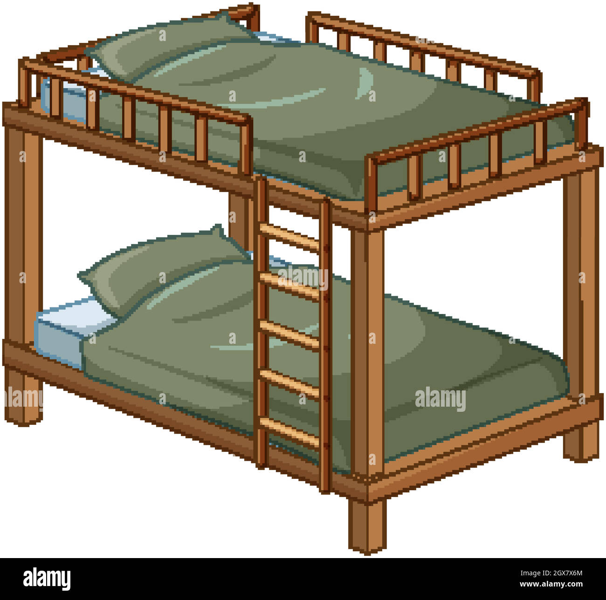
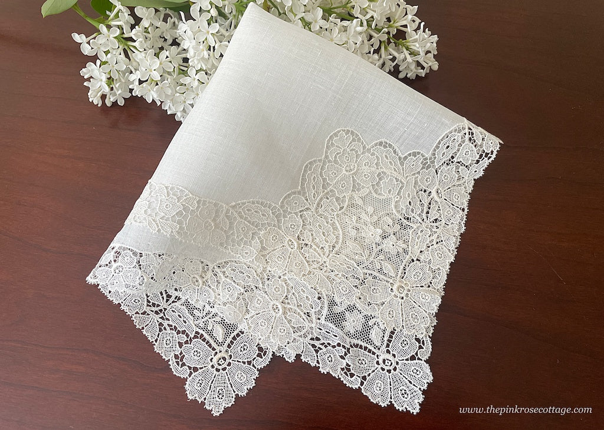
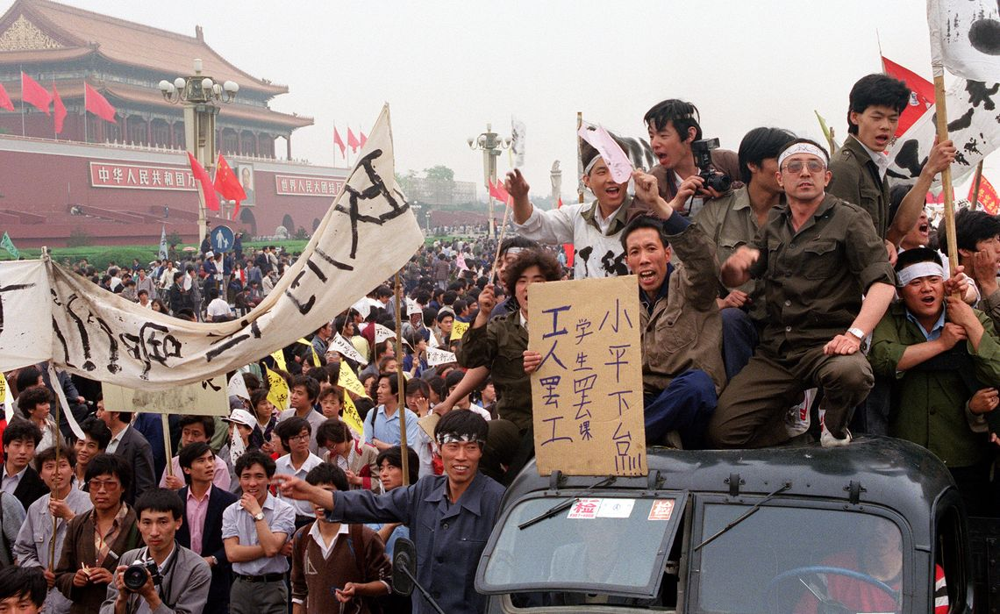
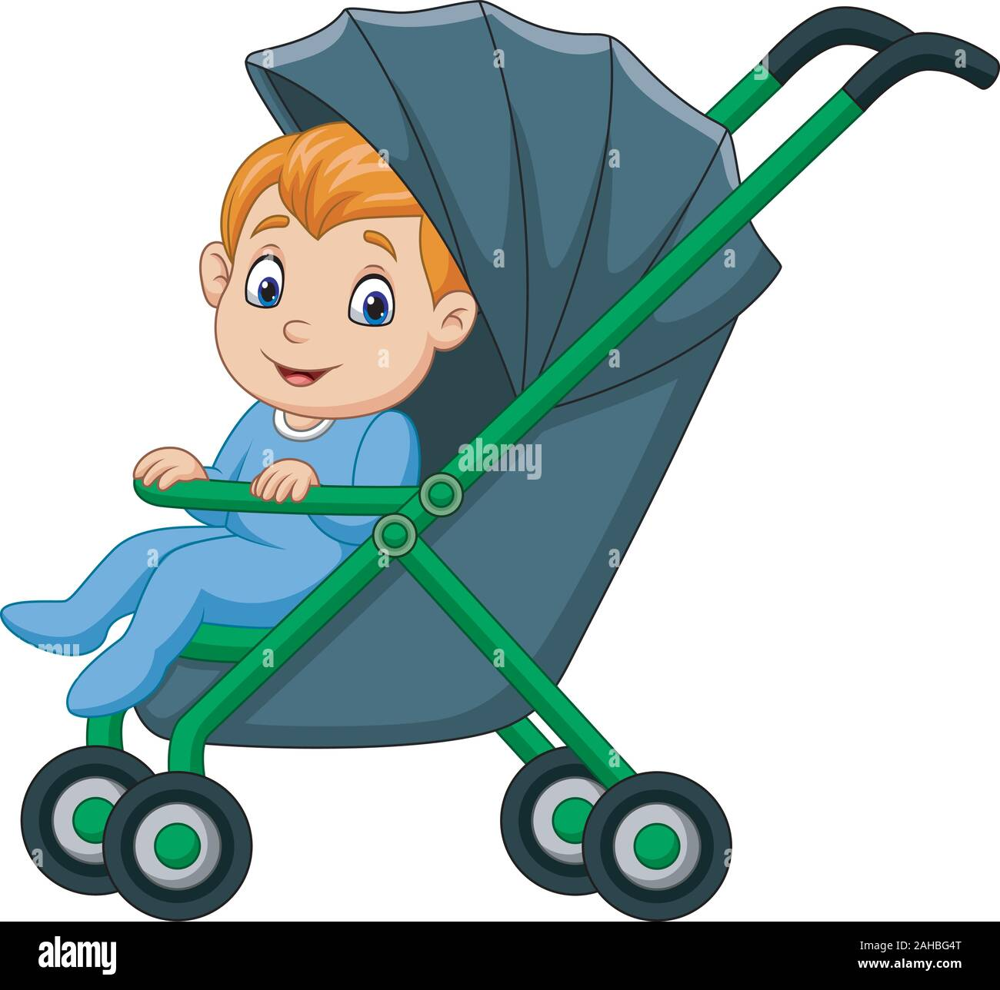
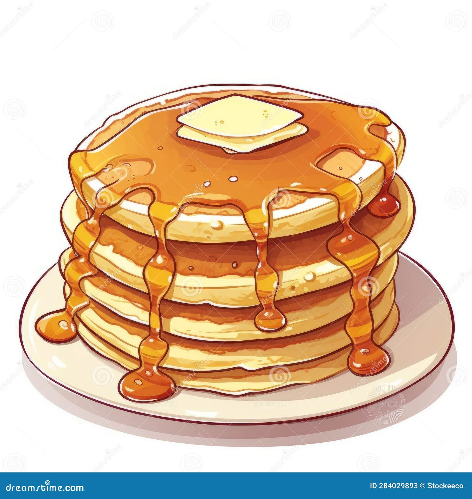
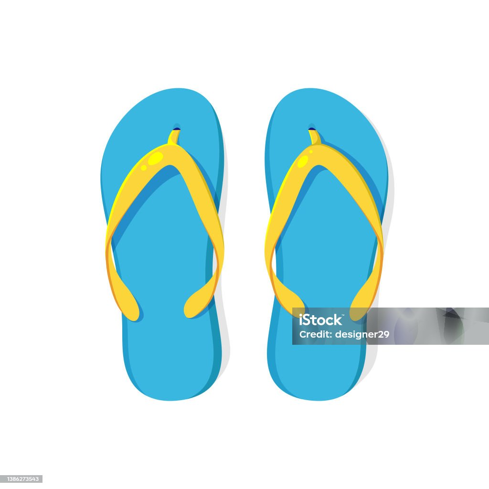
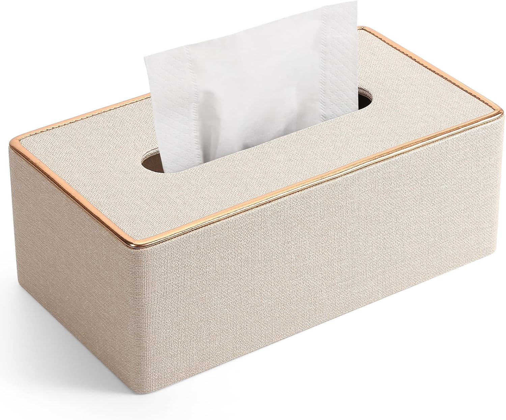

My Vocabulary Page
bunk beds n(plural) //
two beds fixed together with one on top of the other
1/ My sister and I sleep on bunk beds.
2/ There were four bunks in the train compartment.
3/ "The sleeper train consisted of compartments with four bunks
packed like the plague ridden houses of 16th century London."
4/ "Bunk beds are normally supported by four poles or pillars, one at each
corner of the bed. A ladder or a flight of stairs leads to the upper bed,
which normally features a railing to prevent the sleeper from falling off."
5/ "My mother and I live in a cramped flat and sleep on bunk beds."
the upper bunk
6/ "What do you do if your kid doesn't want to sleep on the upper bunk?"
7/ "In this little nest, do you choose the upper bunk or the lower bunk?"
8/ "If the roommate had 10 minutes, he would run into the room and
jump on the upper bunk where he slept."
the lower bunk
9/ "My older brother slept on the lower bunk like this."
10/ "I slept on the lower bunk, and every night, I would contemplate
every move in the darkness."
be stored on the upper/lower bunk
11/ "My road bike is stored on the upper bunk and secured with the net."
12/ "The bedding is stored on the upper bunk which must also be folded out."
13/ "In special circumstances, it is inevitable that things will
need to be stored on the lower bunk.
14/ "The folding lightweight stepladder which does the job but
basically has to be stored on the lower bunk when not in use."
the upper/top bed, the lower/bottom bed
15/ "How do you get on the upper bed?"
16/ "I lay on the bottom bed of the bunks."
17/ "When tired, they'll lay on the top bed, which is covered in
soft plush, so they can relax and observe their surroundings."
the bunk ladder
18/ "I climb down the bunk ladder and leave the small room
me and my brothers share."
19/ "When you climb the bunk ladder, the mounting hook can prevent
the ladder from slipping and sliding."
20/ "The room attendant suggested my 72 year old husband, who walks with
a cane, could climb up the bunk ladder. I said that was out of the question."
triple-decker bunk beds, triple bunk beds
21/ "Where should I buy triple bunk beds in the UK?"
22/ "Triple bunk beds accommodate three sleepers."
23/ "Do triple decker bunk beds fit in rooms with an 8 foot ceiling?"
see also: a loft bed
remind v(t） //
help somebody remember something,
esp something important that they must do
remind somebody
1.1/ "You don't have to remind me all the time."
1.2/ I'm sorry, I've forgotten your name. Can you remind me?
1.3/ "You need to finish that essay." "Don't remind me."
1.4/ "You had an accident," he reminded her.
remind somebody to do something
1.5/ Remind him to call me.
1.6/ Remind me to phone Alan before I go out.
1.7/ Please remind me to post this letter.
1.8/ "Tom reminded me to pay my bills."
1.9/ "My mum always remind me to drink hot water."
1.10/ "My mum reminded me to eat vegetables first when having a hot pot dinner."
1.11/ "My mum always remind me to have proper meal and don't save money
on meal when i just started working 30 years ago."
remind somebody of something
1.12/ I loved her and wanted to remind her of that.
1.13/ "She reminded me of her birthday before going to sleep."
1.14/ She looked at her watch to remind him of the time.
1.15/ "This picture reminded me of the past."
1.16/ "This GM ticket reminded me of the good old days."
1.17/ "Her story reminded me of the good old days."
1.18/ "He reminded me of the deadline for the project."
1.19/ Your advertisements should remind people of your great location.
1.20/ "It is important to remind people of history because it teaches
them about previous happenings."
1.21/ "We will remind you of that very soon."
1.22/ "Today we will remind you of the innovations of this company."
1.23/ Reading the note suddenly reminded me of my appointment with Angela.
remind somebody about something
1.24/ I called to remind him about the party.
1.25/ Could you remind Paul about dinner on Saturday?
1.26/ "He reminded me about the coming deadlines."
1.27/ "Amy reminded me about our holiday plans."
1.28/ "Don't forget the camera." "Remind me about it nearer the time."
remind somebody that ...
1.29/ The bathroom mirror constantly reminds me that I am getting old.
1.30/ He likes to remind everyone that he is a US senator.
1.31/ I quickly reminded him that I had said 'maybe'.
1.32/ I simply remind them that the choice is theirs.
1.33/ Passengers are reminded that smoking is not allowed on this train.
1.34/ Members are reminded that the club's annual general meeting
will take place on Thursday.
1.35/ I'm sure I don't need to remind you that we have lost our last ten games.
1.36/ I called Jane and reminded her the conference had been cancelled.
1.37/ She gently reminded him that the baby was getting cold
and should be taken indoors.
1.38/ The paper reminded its readers that 4,500 soldiers were killed
on the first day of the Normandy landings.
1.39/ The terrorist attack painfully reminded the Americans that
they are vulnerable even at home.
1.40/ "We'd like to remind you that your next loan payment
will be due in ten days."
remind yourself that ...
1.41/ I have to keep reminding myself that things could be much worse.
1.42/ "I have to constantly remind myself that I'm an adult."
1.43/ "I try to remind myself my future self will thank me."
1.44/ "Sometimes I remind myself that I almost skipped the party, that I almost
went to a different college, that the whim of a minute could have changed
everything and everyone. Our lives, so settled, so specific, are built
on happenstance." (Anna Quindlen)
remind somebody/yourself + wh-clause
1.45/ "Your love reminds me who I am.
1.46/ "I decided to remind myself how to cook."
1.47/ Can someone remind me what I should do next?
1.48/ "I write a letter to remind myself who I am.
1.49/ "This song reminds me where I come from"
1.50/ "I played along and reminded her what I wanted done."
1.51/ "The fable reminds me where I come from and how hard I need to
try if I want to live a different life."
1.52/ "An excellent movie on a plane helped remind me what was important in life."
see also: n(c) a reminder
(v) remind somebody of somebody/something:
be similar to, and make somebody think of, something or somebody else
2.1/ He reminds me of my dad.
2.2/ That smell reminds me of France.
2.3/ "The fragrance reminds me of a perfect summer."
2.4/ You remind me of your father when you say that.
2.5/ Your hair and eyes remind me of your mother.
2.6/ You remind me of someone I used to know.
2.7/ I never wear grey because it reminds me of my old school uniform.
2.8/ I liked her immediately because she reminded me of Sally.
2.9/ Something about her manner reminds me of an old school teacher
I used to have.
see also: resemble, look like somebody/something, take after somebody
reminder n(c) //
a written or spoken message that reminds someone to do something
1.1/ I finally paid the bill after two reminders.
as a reminder, ...
1.2/ "As a reminder, I am a businessman, not a magician."
1.3/ "As a reminder, we do not try to influence which of
our products customers choose."
1.4/ "As a reminder, I'm 37 with little kids and can't keep track of new artists."
1.5/ "Just as a reminder, our government currently keeps 5,000 empty
hotel beds reserved and paid for, at all timesas a buffer in case we have
a busy day for dinghy migrants.
the final reminder
1.6/ "You did not receive any prior notice before the final reminder."
1.7/ "I went away for a few days and didn't send you the final reminder."
write/send somebody a reminder
1.8/ I wrote him a reminder that the report was due in next week.
1.9/ We were sent a reminder about the next meeting.
1.10/ Send him a reminder, would you, that payment is due?
1.11/ "A month later, the bank sent a reminder to me."
1.12/ If he forgot to pay his rent, his landlady would send him a reminder.
1.13/ We will send email reminders to committee members.
1.14/ "For default interest to become due, the creditor generally must
send a reminder to the debtor, even if the agreed payment term has expired."
1.15/ "Even though you want to send a payment reminder, you should
always start your emails with politeness."
get/receive a reminder
1.16/ "Got my reminder in the mail today, did you?"
1.17/ Eventually they paid up, but only after receiving several reminders.
1.18/ "If you have received a reminder, we recommend that you
proceed to payment as soon as possible."
a reminder of something
1.19/ "He or she will receive an email reminder of next payment due date."
1.20/ "You will receive a bill at the start of each month
as a reminder of your next payment due."
1.21/ "We don't send statements, but when you make a payment your receipt
will have a tear away reminder of your next payment and amount due."
1.22/ "It is important to send a reminder of upcoming payment due,
as this can help to ensure that the customer makes the payment
on time and avoids late fees."
n(c) a reminder of somebody/something: a person or thing that
makes you remember a particular person, event, or situation
a reminder of somebody/something
2.1/ She kept the shells as a reminder of our days together.
2.2/ The sheer size of the cathedral is a constant reminder
of the power of religion."
2.3/ "Hong Kong's pre-1997 history is a reminder of
our nation's century of humiliation."
2.4/ "The words echo as a reminder of the queen's steadfast
commitment to the people of the UK."
a reminder of the past
2.5/ "Every time I talk to an old friend or family member
it's just a reminder of my past."
2.6/ "It's a reminder of my past self. I have faced difficult times
but decided to move forward and keep my heart open."
2.7/ "Tradition is a reminder of the past. However, it is sometimes opposed to
progress. As a result, there is a gap created between the past and the future."
2.8/ It is a reminder of the past, when young people would shed
their coats in the first days of spring, and their elders would say,
"winter isn't done with us yet."
a reminder of the colonial period
2.9/ "The Central market is a reminder of the colonial period."
2.10/ "The centuries-old Clock Tower, with its distinctive design in
red brick and granite, is a reminder of Hong Kong's colonial era."
2.11/ "The inner decor of the building is a reminder of the colonial period
and there is a courtyard with a large Moorish fountain in the centre."
2.12/ "Although neither of the original ice houses are still standing,
you can walk to the top of Ice House Street on Lower Albert Road to see
a rare architectural reminder of Hong Kong's early colonial past:
a striking low-rise brick and stucco building that stands out amid
a cityscape of glass and steel."
a timely reminder
2.13/ "A timely reminder of how long and hard U.S. stocks can fall."
2.14/ This is a timely reminder of the importance of the
retail sector to our economy.
2.15/ "For teachers, and student teachers, this is a timely reminder of
how hard the process of learning to read is, and offers a possible solution
for their young charges and parents."
2.16/ "Franz Fühmann's story is a timely reminder of how hard it is
to resist propaganda once it has gained momentum."
2.17/ "Public art cannot always be fun, and this piece is a timely reminder
of how hard their life has become. I encourage everyone to make time to see
this dramatic artwork and continue to support our Ukrainian friends."
a reminder of + wh-clause
2.18/ "My name is a reminder of who I am."
2.19/ "This T-shirt is a reminder of where I come from."
2.20/ "Quran is a reminder of what happened in the past,
guidance for the present and warning of the future."
2.21/ Patricia's story is a reminder of how vulnerable women can be
in what is still essentially a man's world.
2.22/ It was a cruel and tragic reminder of how dangerous mountaineering can be.
act/serve as a reminder of something
2.23/ The ruined church acts as a constant reminder of the war.
2.24/ The list serves as a useful reminder of the issues to consider.
2.25/ "India is a name imposed by the British and serves as
a reminder of the colonial era."
2.26/ "This tree will serve as a reminder of the Queen's reign
for generations to come."
2.27/ "It serves as a reminder of what happened in the past and where we are now."
2.28/ "Chalmette serves as a reminder of what happened in the past. It tells
a story about these small groups of men who fought off an entire British army
during the War of 1812 and won miraculously, with minimal casualties."
a reminder that ...
2.29/ The article concludes with a chilling reminder that the disease
can strike anyone at any time.
2.30/ "It's a timely reminder to people that leaving their doors open
is an invitation to thieves."
2.31/ "Jewelry is a reminder that every woman deserves to sparkle and shine,
both on Women's Day and every day."
2.32/ "Each piece of jewelry is a reminder that even a small grain is
authentic, valuable, and the foundation for a big idea."
see also: a monument, a memento
embarrass v(t) //
cause somebody to feel nervous, worried, or uncomfortable
embarrass somebody
1.1/ "My father always embarrasses me."
1.2/ "This dress never embarrasses me."
1.3/ Her questions about my private life embarrassed me.
1.4/ Look, you've embarrassed him - he's gone bright red!
1.5/ He knew that letter would embarrass him and later he tried to get rid of it.
1.6/ Why did you make an announcement in front of everyone?
Did you have to embarrass us like that?
embarrass somebody by doing something
1.7/ "I embarrassed myself by texting a girl."
1.8/ "I will never embarrass myself by using a dating site."
1.9/ I didn't want to embarrass him by kissing him in front of his friends.
1.10/ "Mom, please, don't embarrass my friend by asking her to change."
1.11/ " I embarrassed my family during a social event by stimming
in front of the other people at the event."
1.12/ My mum always embarrasses me by arriving in some ridiculous outfit.
embarrass somebody with something
1.13/ You're embarrassing him with your compliments!
1.14/ "I embarrassed my parents with my poor grades."
1.15/ "I embarrassed my family with my low income."
1.16/ "I feel as if I've embarrassed my family with that comment."
embarrass somebody in front of somebody/something
1.17/ I didn't want to embarrass her in front of her friends.
1.18/ "My teacher embarrassed me in front of the class."
1.19/ "My mother embarrassed me in front of everybody."
1.20/ "I embarrassed myself in front of my school when I was giving a speech."
it embarrasses somebody to do something
1.21/ It embarrassed her to talk about her weight problem.
1.22/ To be honest, it embarrassed me to receive such an effusive welcome.
1.23/ "It embarrasses me to give a speech in front of strangers."
1.24/ " "It embarrassed her to hold such a low opinion of Leisha's ability,
but it wasn't a reflection of contempt."
it embarrasses somebody when ...
1.25/ "It embarrassed me when my friends came over."
1.26/ "It embarrassed me when you mentioned my weight to Uncle Tim."
1.27/ "It embarrassed me when you started to slur your words
in front of everyone."
1.28/ "It embarrassed her when she first heard me singing about her,
but then she laughed so that was all right."
v(t) embarrass somebody: cause problems or difficulties for somebody
2.1/ The speech was deliberately designed to embarrass the prime minister.
2.2/ "Princess Diana embarrassed the royal family by sharing secrets."
2.3/ "Three times Queen Camilla embarrassed the royal family
with her clumsy etiquette."
2.4/ The scandal has totally embarrassed cricket's governing body.
2.5/ "The scandal embarrassed Netanyahu on different levels."
2.6/ "The scandal embarrassed the government of Atal Bihari Vajpayee
and sullied the image of Defence Minister George Fernandes
leading to his resignation."
embarrassing adj //
making you feel shy, uncomfortable or ashamed
1.1/ "I made an embarrassing mistake at work."
an embarrassing moment
1.2/ "Why should you be laughing at an embarrassing moment?"
1.3/ "You could cringe at an embarrassing moment that was out of
your control, like someone spilling their drink on you."
1.4/ "At this embarrassing moment, I knew just what to do.
I broke eye contact and quickly gave the woman a wide berth."
1.5/ My most embarrassing moment was trying to introduce a woman
whose name I couldn't remember.
1.6/ "My most embarrassing moment was when I crashed my bicycle
and ate some bricks."
an embarrassing situation
1.7/ "Have you ever been caught in an embarrassing situation?"
1.8/ "He never got caught in an embarrassing situation."
1.9/ Employees may be offended and the employer could be placed
in an embarrassing situation.
an embarrassing question
1.10/ "Can I ask you an embarrassing question?"
1.11/ "Amity lifts her head unsure how to respond to an embarrassing
question like that."
1.12/ "I can answer an embarrassing question in public without getting flustered."
an embarrassing experience
1.13/ "Describe an embarrassing experience in your life."
1.14/ "What was the most embarrassing experience in your life?"
1.15/ "What was the most embarrassing experience you had with a female teen?"
1.16/ "What was your most embarrassing underwear experience?"
an embarrassing memory
1.17/ "Why do we blurt things out when we recall
an embarrassing memory while alone?"
1.18/ "How do you get an embarrassing memory out of
your head and focus on today?"
1.19/ "They recalled an embarrassing memory from school times,
when a classmate, asked by a technical teacher, couldn't properly
draw a bike from memory."
(after verb) be embarrassing
1.20/ I found the whole evening intensely embarrassing.
1.21/ My mother's presence made the situation even more embarrassing.
1.22/ "What is more embarrassing than having your trousers' zipper undone?"
1.23/ "How do you tell your significant other that singing in public is embarrassing?"
be embarrassing for somebody
1.24/ "Dancing is embarrassing for me."
1.25/ "Singing in public is embarrassing for her."
1.26/ It was acutely embarrassing for us all.
1.27/ "For me singing in front of strangers is embarrassing."
be embarrassing doing something
1.28/ It was so embarrassing having to sing in public.
1.29/ "It is embarrassing having to turn around the opposite way
in the middle of walking one way."
1.30/ "All girls can relate that it is embarrassing going to the
nurse's office or begging friends for a pad or tampon."
it is embarrassing (for somebody) to do something
1.31/ His terrible acting is just embarrassing to watch.
1.32/ "It is embarrassing for me to have to ask you this."
1.33/ It was embarrassing for me to be caught telling a lie.
1.34/ "I'm a female. Is it embarrassing to be a virgin at 18?"
1.35/ It can be embarrassing for children to tell complete strangers
about such incidents.
it is embarasssing when ...
1.36/ "It was very embarrassing when my pants fell down."
1.37/ "It's really quite embarrassing when your bra is
noticeably mangled under your shirt."
1.38/ "It was incredibly embarrassing when my underwear literally always
showed because it was made to sit higher than my jeans were."
1.39/ "It was embarrassing when my bra was showing through my shirt."
1.40/ "It was embarrassing when I stammered over a bunch of seemingly
jumbled words when I was called to read aloud in front of the class."
it is embarasssing that ...
1.41/ "It is embarrassing that I don't know how to do this task."
it is embarasssing + wh-clause
1.42/ It was embarrassing how few people attended the party.
(adj) causing somebody to look stupid, dishonest
2.1/ This EU ruling puts Britain in a very embarrassing position.
2.2/ "Great Britain has put itself in an embarrassing position due to
politicians who have failed in managing the country."
be embarrassing to somebody
2.3/ The report is likely to prove highly embarrassing to the government.
2.4/ "Embarrassing to our country": Trump suggests he'll fire top generals."
2.5/ "Trump is not only embarrassing to our country, but he is a danger
to our national security and frankly a danger to world peace."
be embarrassing for somebody
2.6/ Such action by a NATO ally would be extremely embarrassing
for the United States.
it is embarrassing that ...
2.7/ "It is pretty embarrassing that the UK is not regulating itself."
2.8/ "It is embarrassing that we pride ourselves as a football nation
but we don't have one standard stadium-"
embarrassed adj //
feeling ashamed or shy
be/feel/look embarrassed
1.1/ I've never felt so embarrassed in my life!
1.2/ "My boyfriend makes me feel embarrassed."
1.3/ He looked a little embarrassed.
1.4/ You have no idea how embarrassed I was.
1.5/ He was so embarrassed - his face went brick-red.
make somebody embarrassed
1.6/ "You make me so embarrassed."
1.7/ "This of course made her very embarrassed."
1.8/ "Elon Musk has made me embarrassed to drive my Tesla now."
be embarrassed by something
1.9/ She seemed almost embarrassed by her own outburst.
1.10/ She looked a bit embarrassed by all the praise.
1.11/ "You will be less embarrassed by your words and actions."
be embarrassed about something/doing something
1.12/ He's embarrassed about his weight.
1.13/ "I am really embarrassed about my grades."
1.14/ I was embarrassed about talking to my parents about it.
1.15/ She felt embarrassed about undressing in front of the doctor.
1.16/ "I was embarrassed about taking off my top."
1.17/ "I was embarrassed about taking off my underwear in front of my girl."
be embarrassed for somebody
1.18/ "I am embarrassed for you."
1.19/ "I was embarrassed for my mom and dad."
1.20/ "I was embarrassed for my husband and wanted to
crawl and hide in another room."
1.21/ His colour had risen and Isobel felt embarrassed for him.
be embarrassed to do something
1.22/ She seemed faintly embarrassed to see us there.
1.23/ I was too embarrassed to admit that I was scared.
1.24/ I'm embarrassed to admit it, but I laughed.
1.25/ I was too embarrassed to admit that I'd forgotten.
1.26/ Some women are too embarrassed to consult their doctor about the problem.
1.27/ "She was a very shy woman and was embarrassed to undress
in front of strangers."
be embarrassed for somebody to do something
1.28/ "I'd be so embarrassed for my son to act like that."
1.29/ "I was very embarrassed for my mom to receive this as a Mother's Day gift."
1.30/ "There have been times when I've been embarrassed for my wife
to even look at me without a shirt on."
be embarrassed when ...
1.31/ "I was very embarrassed when I found this article."
1.32/ "I was embarrassed when she saw me buck naked."
1.33/ Sometimes I get a bit embarrassed when I have to explain to people.
1.34/ "I felt embarrassed when my friends made fun of my hair."
be embarrassed at something/doing something
1.35/ She was embarrassed at her own behaviour.
1.36/ He was obviously embarrassed at his lack of preparedness.
1.37/ He felt embarrassed at being the centre of attention.
(adj) financially embarrassed
2.1/ I'm afraid I'm financially embarrassed at the moment.
2.2/ "He is financially embarrassed by the penalty."
2.3/ He was often financially embarrassed but never suffered real hardship.
2.4/ "I am financially embarrassed right now. I need help to turn things around."
2.5/ The singer found himself financially embarrassed and unable to pay his bar bill.
2.6/ "When the war broke out New Zealand was financially embarrassed by
the expensive schemes of social reform introduced by her Labor Government,
and was heading for economic crisis."
housing estate n(c) //
an area containing a large number of houses or apartments
built close together at the same time
1/ "A security guard patrols the housing estate at night."
2/ "Our housing estate is built on a shopping mall,
on top of which there is a rooftop garden.
3/ "We decided to build a luxurious housing estate here on Pemba
so that you can have the opportunity to live on the paradise island."
4/ "The housing estate accommodates around 15,000 asylum seekers
placed there as part of the Government's dispersal policy."
live in/on a housing estate
5/ They live in a housing estate.
6/ They live on a housing estate.
7/ "What is it like living in the housing estate between Weston and Newbridge?"
8/ "At the time, my family and I lived in a housing estate made up of 1004 flats."
a private housing estate
9/ "I live in a private housing estate of 38 houses in Scotland."
10/ "I pride myself on living in a private housing estate."
11/ "She lived in a private housing estate in Tung Chung and often
made use of the club house shuttle bus of the housing estate to travel
to the club house of the housing estate in Tsim Sha Tsui."
12/ "Many residents of Tai Hang Sai Estate have spent most of their lives
in the city's only private low-rent estate."
13/ "The city's only privately-owned low-rental housing estate
Tai Hang Sai Estate, which dates back to 1965, faces demolition."
a public housing estate
14/ "My grandma lived in a public housing estate."
15/ "There are public spaces on the public housing estates."
16/ "Choi Hung Estate, with a history of over 60 years,
is one of the oldest public housing estates in Hong Kong."
17/ "Gathering places within shopping areas are encouraged. It is the best way
to sustain active human interaction and community life in a public housing estate.
move to a housing estate
18/ "Michael and his family have moved to a housing estate in Newcastle."
19/ "When we moved to the housing estate in 1968, it had only one school."
20/ "My family moved to the newly built housing estate of
Toa Payoh in the late 1960s."
a high-end housing estate
21/ "A Chinese woman walks past a high-end housing estate in Beijing."
22/ "Though the couple were lucky to have belonged to the upper middle-class
in America, living in a high-end housing estate and driving top-of-the-range cars,
they lacked happiness in their marriage."
an affordable housing estate
23/ "We buu a private house in an affordable housing estate."
24/ "Is there a downside to buy a house in an affordable housing estate?"
move (away) from a housing estate
25/ "I moved from a housing estate to the country to bring my kids up,
and I really miss the banter and camaraderie of estate life."
26/ "After he moved away from the housing estate he didn't
experience the same level of police harassment."
move out of a housing estate
27/ "Having worked as a barber in Tanglin Halt more than half his life,
Mr Abdullah Latip, 75, now mainly serves regular customers, some of whom
have moved out of the housing estate and return specially for his haircuts."
a flat(/an apartment) in a housing estate
28/ "Those wishing to buy a flat in Yuzhnoye Vidnoye
have plenty of opportunities for that."
29/ "Tenants are scheduled to move into their flats in the housing
estate from October 15 after it was inaugurated on Thursday last week."
30/ "Demand is high, and the prices of apartments in the housing estate
have remained at a relatively high level."
a property (= a flat or a house) in a housing estate
31/ "The first of the properties in the housing estate in Les Mureaux,
a town north west of Paris, will be demolished in September, with others
being knocked down in 2026."
32/ "There are many properties in this housing estate with the same design
- a wooden fence just behind a concrete block retaining wall."
33/ "My family has bought a property in KL with 50% ownership
belonging to me and 50% belonging to my mother."
a resident in a housing estate
34/ "I am a resident living in a private housing estate."
35/ "The aim is to provide convenient transport to the residents
in the housing estate."
36/ "The final few residents in the housing estate have been
moving out of their homes."
an owner of the housing estate (see also: a landlord, a flat owner)
37/ "The latest owner of the housing estate is in a hurry to leave."
38/ "The Appellant is the Incorporated Owners of a housing estate,
representing the owners of the housing estate."
a tenant of the housing estate
39/ "The result showed that 122 out of the 751 tenants
in the housing estate were females."
40/ "Recent years have seen many of the tenants of the housing estate
exercising their right to buy their property's."
in the neighbourhood(/vicinity) of a housing estate
41/ "There will also be retail and other community facilities
in the vicinity of the housing estate to meet the needs of the residents
and the community."
42/ " This is an extraordinary opportunity to stroll around the
neighborhood of the housing estate or the apartment of your choice."
amenities near a housing estate
43/ "There are no entertainment amenities near the housing estate."
44/ "There are parks, shops and other local amenities close to
the housing estate where I live."
within walking distance from a housing estate
45/ "Nice recreation facilities are available within walking
distance from the housing estate."
be 5 minutes away from a housing estate
46/ "There is also a lot of green areas, not more than 10 minutes
away from the housing estate."
be a 5-minute walk from a housing estate
47/ "The nearest bus stop is an 8-minute walk from the housing estate."
48/ "The Old Town is less than a 20-minute walk from the housing estate."
kimono n(c) //
a long, loose piece of outer clothing with very wide sleeves,
traditionally worn by the Japanese
1/ "The quintuplets wore kimonos to the festival."
2/ "How do I soft wash my kimono at home?"
3/ "I took off my kimono just to put on a different kimono."
4/ "The ladies at the salon helped me to put on my kimono,
which actually took a really, really long time."
hang a kimono on something
5/ "If you want, you can hang a kimono on the wall instead of a painting."
6/ "Put it on a hanger. In order to smooth out wrinkles caused by folding,
hang the kimono on a hanger one day before wearing."
parts of a kimono
7/ "The kosode is the main body or robes of the kimono,
consisting of a long T-shaped robe with very wide sleeves."
8/ "The obi is the belt that is wrapped around the waist over the kosode."
9/ "Tabi are traditional Japanese split-toe socks."
10/ "Wooden getas are sandals elevated off the ground by two teeth."
11/ "A juban is worn under a kimono, with just the collar visible."
12/ "While the three main components of a kimono that are visible from
the outside are the obi, the specific belt worn with kimono,
tabi, the socks worn under kimono, and the kimono itself,
the garments worn underneath it are equally as important."
a yukata (literally: a bathrobe)
13/ "The yukata is a casual version of the kimono."
14/ "Want to try on a beautiful yukata and snap a picture?"
15/ "A yukata girl was enjoying the cool of the evening while watching fireworks."
16/ "Fold your right-hand sleeve over your front first, followed by
the left-hand sleeve. This will ensure you are wearing your yukata
in the proper, right-front style. Tie your obi sash to keep your yukata
in place. Men should wear their sash at the hip, and women at the waist."
handkerchief n(c) //
(also: hanky) a square piece of cloth or paper used for cleaning
the nose or drying the eyes when they are wet with tears
1/ She took out her handkerchief and blew her nose loudly.
2/ "Mosey put her handkerchief in her pocket and asserted her dignity."
a silk/lace/cotton handkerchief
3/ "My mom carries with her a lace handkerchief from her mother."
4/ "Every lady or gentleman should carry a silk handkerchief."
5/ "A silk handkerchief without a tie says you're not so buttoned up
that you are willing to stand on ceremony and swelter on a hot day,
but you're also not ready to let decorum go to hell completely."
6/ "For blow rather than show, a cotton handkerchief is a gent's pocket essential."
lend(/offer) a handkerchief to somebody
7/ "My cat came and offered me a handkerchief."
8/ "Kate took my hand and lent me her handkerchief."
9/ "I lent my handkerchief to a friend who had a runny nose."
wave a handkerchief at somebody/something
10/ "I waved my handkerchief at him."
11/ "Craning my neck out the window, I waved my handkerchief
at every passing carriage."
12/ "I stood there with my opera glasses and waved my handkerchief at you all."
wash a handkerchief
13/ "No woman likes to wash a dirty handkerchief."
14/ "You can wash handkerchiefs in a washing machine with regular colored laundry."
15/ "Please use neutral detergents to wash the handkerchief by hand,
and then leave it air dry."
fold a handkerchief (up)
16/ "Ever wondered how to fold a handkerchief to avoid germs?"
17/ "I folded up my handkerchief and tucked it in my pants."
18/ "I fold a handkerchief up lengthwise several times
the same as we do when making a headband."
19/ "There are actually a number of different ways to fold a handkerchief
to properly fit into the breast pocket of your suit jacket."
blow your nose on a handkerchief
20/ He blew his nose on a dirty handkerchief.
21/ "I blew my nose on a handkerchief and started walking."
sneeze in a handkerchief
22/ "I went back into my room and sneezed in a handkerchief."
23/ "Sometimes she sneezes in a handkerchief to cover her sneezes."
cry in a handkerchief
24/ "She would cry in a handkerchief out of joy and happiness."
wipe something with a handkerchief
25/ "She wiped her hands with a handkerchief."
26/ "She wiped her weeping eyes with a handkerchief."
27/ "She wiped her tearing eyes with a handkerchief."
28/ "I wipe my eyes with a handkerchief and turn away."
29/ "She wiped her eyes with a handkerchief before walking away."
30/ "As she returned to her seat, Shiomura wiped her eyes
with a handkerchief, but the proceedings continued."
31/ "Before cleaning, it is important to wash your hands with water
and neutral soap to avoid infecting the baby's eye. You should never wipe
the eyes with your hand, cotton or a cloth or paper handkerchief.
A sterile object must always be used."
clean/dry something with a handkerchief
32/ "I wanted to clean my nose with a handkerchief."
33/ "Biwako admitted defeat, then cleaned her eyes with a handkerchief."
34/ "When I was sleeping on benches in Aflao,Nobody cleaned
my face with a handkerchief."
35/ "I quickly dried my eyes with a handkerchief as Momo went to get the door."
see also: a washcloth, a dishcloth, a towel, a napkin, a scarf
parade n(c) //
a public celebration of a special day or event,
usually with bands in the streets and decorated vehicles
1.1/ The parade is held every year.
1.2/ She twirled her baton high in the air as she led the parade.
1.3/ Tomorrow's parade will mark the 50th anniversary of the battle.
1.4/ Live music and a parade set an upbeat mood for the official opening.
1.5/ "Officers simulated an exercise in which a parade turned into
a riot and so they used different tactics to tackle the situation."
1.6/ "The photo shows a parade on a crowded city street paved with bricks."
1.7/ "I want to wear my Halloween costume to my kid's school parade."
a vicrtory parade
1.8/ "He participated in the World Cup victory parade."
1.9/ "There were more trophies than cars in our victory parade."
1.10/ "Liverpool's victory parade will start at Allerton Maze before
travelling on Queens Drive towards the Fiveways roundabout and
Rocket flyover. The route will finish at Blundell Street."
a Disney parade
1.11/ "When you plan and prep for a Disney parade, you can expect
an enchanting experience that’s sure to put a smile on your face
- and maybe leave you with a new dance move, too!"
1.12/ "Part of the fun of Disney parades is waving and dancing along,
and if you’re positioned near enough to the parade’s path, you may even
get a high-five from a passing character!"
a parade of a group of people
1.13/ "From our outdoor soaking tub overlooking the dotted landscape
of Laikipia, wine glasses in hand, we watched a parade of elephants
slowly amble into the sunset."
1.14/ "Veterans and families are invited to participate in a parade
of veterans on Monday, November 11, 2024."
at a parade
1.15/ Thousands of people were at the parade.
1.16/ "Family members came out to cheer on the grads at the June 4th parade."
1.17/ "We all decide to have something to eat as the candy we ate
at the parade wasn't enough to suffice."
in a parade
1.18/ "I saw Mickey Mouse in the Disney parade."
1.19/ "This weekend I walked in the parade celebrating Youngwood's
125th anniversary!"
1.20/ "That anything happened in the parade that was negative,
or hurt anybody's feelings, we are sorry."
1.21/ "He's been marching in the parade since grammar school and
he's been supporting the parade thoughout his entire life."
a parade begins, a parade ends
1.22/ "The HK Pride Parade began at 6pm with a procession
around the Lan Kwai Fong area."
1.23/ "The parade will begin in the area of Winn Rd. and Highview St."
1.24/ "The parade will end at 6 pm at the Field House."
1.25/ "The parade ended at Sawyer Point and Yeatman's Cove where
the festival, with food, booths and live music, continued."
1.26/ "Keep your calendar marked for Saturday, March 16th, 2024.
The festival starts at 10:00 AM and the parade will be from 11:00 AM
until 1:00 PM."
hold a parade, organize a parade
1.27/ "From 1990 to 2019, HKASPDMC held the June Fourth Parade and
Victoria Park Candlelight Rally for 30 consecutive years."
1.28/ "They would like to try to organize a parade from Oberland Park
or the old fire station to the center cemetery, where the traditional
flag raising will be held as it has in previous years."
see/watch a parade
1.29/ We watched the parade from our perch on the scaffolding.
1.30/ "Thanks to everyone that came out or watched the parade at home."
1.31/ "Did I openly weep when Mulan came and watched the parade
at Magic Kingdom with Winnie?
1.32/ We used to go and see the Thanksgiving Day parade in New York.
1.33/ From our hotel room window, we had a grandstand view of the parade.
join a parade, take part in a parade
1.34/ "People take part in a parade towards the Sheffield War Memorial."
1.35/ "We were thrilled to take part in the parade for another
year at Belfast Pride."
1.36/ "I will take part in the parade for the first time. I really
wanted that. When I was still in school, I liked to watch parades."
1.37/ "Today we joined the parade at Norwich Pride. Pride brings out
the very best in people, creating one of the friendliest, buzziest days
you can hope for. I had a blast with the Norfolk team, representing the Trust!"
walk a parade (route)
1.38/ "Check out the full list of events, sign-up here to walk
the June 4th parade with us."
1.39/ "Herrick, husband James and their children dolled up their dog, Ada,
for a canine parade held prior to the main event. Eldest son Conrad, 7,
also walked the traditional parade route with Children’s Theater of Elgin."
line up (somebody/something) for a parade
1.40/ "Parade line up will be from 10:30 - 11:30am."
1.41/ "Where do I go to line up for the parade?"
1.42/ "People were lined up for the St Patrick's Day parade
at least one hour before it."
1.43/ "People were lined up for the parade so we decided to stay and watch."
1.44/ "Adlington Carnival was a huge success with four wagons all lined
up in the parade - very proud of our team!"
leave a parade
1.45/ "I left the parade with a full heart and a camera full of memories."
1.46/ "We left the parade early, and was in line for
the Haunted Mansion by 11:55 pm."
1.47/ "I took no pictures this year. And we left the parade early
and wandered around the park for a bit."
withdraw from a parade
1.48/ "Because our team withdrew from the parade previously and re-entered
only eleven years ago, the group is assigned to the back end of the parade
according to the organiser's rules. And that’s why we arranged a vibrant
marching wind band as the grand finale of the parade."
disperse a parade
1.49/ "Police were less amused. They dispersed the parade at
the Sanlitun shopping area."
1.50/ "Once the crowd has dispersed, the parade entrants will have
access to Main St. Main Street will not be re-opened until parade has
officially ended per discretion of the Spring Grove Police Department."
a parade for somebody/something
1.51/ "A couple of years ago we walked the parade for women's rights."
1.52/ "On the day that the Consul Generals of 19 countries and some of
the district mayors of Istanbul organized a parade for the victims of
the suicide attack in Istanbul, the world was shocked by three coordinated
suicide attacks in Brussels, Belgium."
a parade in celebration of something
1.53/ "People participate in a parade in celebration of
the Chinese New Year in Vancouver."
1.54/ "NYC will hold a parade in celebration of the New York Liberty's
historic victory.
a parade in meomory of somebody/something
1.55/ "The photo captures a trade parade in memory of fire victims."
1.56/ "Hundreds of bikers have put on a parade in memory of a young
Hampshire man who died in an accident."
see also: n(c,u) procession, a march, a protest, a rally
n(c,u) a military parade
2.1/ They held a parade to mark the soldiers' return.
2.2/ "North Korea's military parade shows unity with China and Russia."
2.3/ "Showcasing foreign delegations in North Korea's
military parade is not common."
2.4/ "It is the first time delegations from China and Russia, led by
high-level officials, have participated in North Korea's military parade."
2.5/ "Chinese President Xi Jinping watched the military parade marking
the 90th anniversary of the founding of the Chinese People's Liberation Army."
on parade
2.6/ The entire regiment was on parade.
2.7/ The book cover shows soldiers on parade.
2.8/ They stood as straight as soldiers on parade.
2.9/ Dress uniforms like these are worn when soldiers are on parade.
2.10/ They walked in step, looking straight ahead, almost like soldiers on parade.
2.11/ To celebrate the conclusion of their initial training program,
the cadets were on parade.
[figurative] on parade
2.12/ "Our brand new models are on parade this weekend."
2.13/ The latest software will be on parade at the exhibition.
2.14/ "The array of items on parade in their various workshops attested
to the expertise acquired over the years, both in brass and aluminium work."
2.15/ "He has the most incredible stock of wines, some on parade
in the shop, some hidden behind a locked door."
(idiom) rain on somebody's parade:
prevent somebody from enjoying an event; cause somebody's plans to fail
3.1/ "Was it an asshole move to rain on her parade?"
3.2/ "I hate to rain on your parade, but I think your A in
chemistry was actually a clerical error."
3.3/ Mom really rained on our parade by chaperoning our school dance.
3.4/ "For all the times that you rained on my parade
And all the clubs you get in using my name
You think you broke my heart, oh girl, for goodness' sake
You think I'm cryin' on my own, well, I ain't" (Love Yourself, Justin Bieber)
see also: spoil my day, ruin my day
parade v(i,t) //
(of a group) walk or march somewhere, usually as part of a public celebration
4.1/ The victorious team will parade through the city tomorrow morning.
4.2/ The Saint Patrick's Day marchers paraded up Fifth Avenue,
past the cathedral.
4.3/ "We paraded up and down the halls because of rain and it was a lot of fun."
4.4/ The crowds applauded as the guards paraded past.
4.5/ "The queen paraded from her home in Buckingham Palace through
the streets of London to the government buildings at Westminster in
a horse-drawn carriage escorted by the Household Cavalry,
who serve as her mounted bodyguards."
parade somebody/something
4.6/ The colonel paraded his men before the King.
4.7/ "The torch was paraded in the park, followed by the
lighting of the cauldron in front of the city hall."
4.8/ "I had to parade my dogs through the lobby in the mornings
while everyone was eating breakfast."
4.9/ In ancient Rome, captured generals were paraded through
the streets in chains.
4.10/ "When she failed in her attempt, she paraded my daughter from
room to room and made the children say shame, shame," the mother said.
v(i,t) show something in an obvious way in order to be admired
5.1/ People were parading up and down showing off their finest clothes.
parade somebody/something
5.2/ He is not one to parade his achievements.
5.3/ "Ukraine has paraded captured Russian soldiers before the media
at news conferences in Kyiv, and these images have been spread via
official accounts on social media and messaging apps."
parade (something) in front of somebody/something
5.4/ The prisoners were paraded in front of the crowd.
5.5/ "For two hours, scores of women paraded in front of
me like a Golden Corral buffet."
5.6/ "Lovely, darling," I tell her with perfect honesty as each
new dress is paraded in front of me."
parade around (something)
5.7/ The trophy was paraded around the stadium.
5.8/ The children paraded about(/around) in their new clothes.
5.9/ "Human Rights Watch urges Ukraine to stop parading
around Russian prisoners."
5.10/ "I wore this costume several times around Halloween and everyone was
always amazed at how real it looked, thanks to my Mom. Halloween was so special
as I paraded around in my costume that finally made me feel like a real wizard."
see also: show off (something) (to somebody)
excuse v //
(idiom) excuse me
1.1/ Excuse me, is this the way to the station?
1.2/ Excuse me, does this bus go to Oxford Street?
1.3/ Excuse me, could you let me through?
1.4/ Excuse me, can I just get past?
1.5/ "Excuse me, can i get past you?"
1.6/ "Excuse me, do you have any time now?"
1.7/ "Excuse me, I can't hear you."
1.8/ Guy sneezed loudly. "Excuse me," he said.
1.9/ "Excuse me, do you have some time to talk about our lord and savior?"
excuse me for a moment
1.10/ "Please excuse me for a while."
1.11/ "Excuse me for a moment," she said and left the room.
1.12/ Excuse me a moment, I'll be with you shortly.
(do) excuse me: say sorry for something you have done by accident
1.13/ Oh, excuse me. I didn't see you there.
1.14/ Did I take your seat? Do excuse me.
excuse me: said before disagreeing with somebody
1.15/ Excuse me, but aren't you forgetting something?
1.16/ Excuse me, but I don't think that's true.
v(t) forgive somebody for something that they have done,
for example not being polite or making a small mistake
excuse something
2.1/ Please excuse the mess.
2.2/ "Please excuse my mistake."
2.3/ "I should excuse your manner since you are new here."
2.4/ "I will excuse your bad manners this once, if you help me get up,
you impolite prune."
2.5/ Her boss cannot excuse even the smallest error,
although he himself is far from perfect.
2.6/ She is almost too kind - always excusing their bad behaviour
instead of dealing with it firmly.
excuse somebody
2.7/ You must excuse my father - he's not always that rude.
2.8/ "You must excuse me, I've grown quite weary."
excuse somebody for something
2.9/ She had been excused for her actions.
2.10/ We cannot excuse him for these crimes.
2.11/ "As always, excuse me for my poor English."
2.12/ "The headmaster is excused for any wrongdoing."
2.13/ "I do hope you can understand me and excuse me for my wrongdoings."
excuse somebody for doing something
2.14/ "Please excuse me for being late at work."
2.15/ Please excuse me for arriving late - the bus was delayed.
2.16/ You might be excused for thinking that Ben is in charge.
excuse somebody(/somebody's) doing something
2.17/ Excuse me interrupting you.
2.18/ Excuse my interrupting you.
2.19/ "Excuse my using your name." (A Study in Scarlet)
2.20/ If you'll excuse me pointing this out, I think you've made a mistake here.
2.21/ Please excuse my stomach rumbling - I haven't eaten all day.
see also: pardon
v(t) [justify] make your or somebody else's behaviour
seem less offensive by finding reasons for it
excuse something
3.1/ Nothing can excuse such rudeness.
3.2/ No amount of financial recompense can excuse the way
in which the company carried out its policy.
3.3/ "Worse, she used her faith to excuse her bad attitude and
behavior towards Sheldon's closest friends.'
excuse (bad) manners
3.4/ "I don't excuse her bad manners at night."
3.5/ "You are simply trying to excuse your bad manners."
3.6/ "I'll excuse your manners on account of cultural differences."
excuse (bad) behaviour
3.7/ Nothing can excuse that sort of behaviour.
3.8/ "Quit trying to excuse your behaviour."
3.9/ "Your past doesn't excuse your behavior."
3.10/ "Why do we continue to excuse bad behavior?"
3.11/ "It's an explanation, but it doesn't excuse your behavior."
3.12/ "I know you're upset but that doesn't excuse your behaviour."
3.13/ "Are you trying to excuse your behaviour by making an excuse?"
3.14/ "You don't get to use my cancer to excuse your bad behaviour."
3.15/ "When you try to rationalize and excuse your behavior,
you're just covering up."
3.16/ "Just because you have been through a lot doesn't mean
that people should excuse your bad behaviour. You are also contributing
to your own suffering."
excuse (an) addiction
3.17/ "People often excuse an addiction by calling it a habit."
3.18/ "I know at times you have attempted to justify and excuse your addiction."
3.19/ "That doesn't excuse drug addiction, but it helps explain it."
3.20/ "What a very broad and long walk to excuse a gambling addiction."
3.21/ "To enable or excuse alcohol addiction in someone we love
is to tacitly participate in their sin."
excuse something as something
3.22/ He tried to excuse his behaviour as 'a bit of harmless fun'.
3.23/ "Are we nowadays too willing to excuse bad behaviour as the
morally-neutral symptom of some newly-defined mental disorder?"
excuse somebody/yourself
3.24/ I could try to excuse myself, but why bother?
3.25/ "I live alone as well and always excuse myself when burping."
excuse somebody(/yourself) for something
3.26/ Should her previous good actions excuse her for the
terrible things she is doing now?
3.27/ "Duncan's busy trying to excuse her(Donna) for what she did
or try to understand what motivated her to murder because he
was close to Donna at one point."
excuse somebody(/yourself) for doing something
3.28/ He excused himself for being late by explaining that
his flight had been delayed.
3.29/ "It does not excuse the father for keeping the child
a week or more past the time to return the child."
3.30/ "You might excuse an elderly person for forgetting
some facts about government or history."
3.31/ I know you are tired, but I really can't excuse you
for being so rude and selfish about this.
v(t) allow somebody not to do or attend something
when they normally would have to
4.1/ You are excused - you may go.
4.2/ Now if you'll excuse me, I'm a very busy man.
4.3/ She excused herself and left the meeting early.
4.4/ Will you excuse me? I've got to make a phone call.
excuse somebody from something
4.5/ "Please excuse me from the meeting if I'm late."
4.6/ I'll try to get them to excuse me from the meeting.
4.7/ Please excuse me from the rest of the meeting - I've just
received a phone call that requires my immediate attention.
4.8/ "I would excuse myself from the party without any drama by
telling the host I wasn't feeling well or that something came up."
excuse somebody from doing something
4.9/ "I was never short of doctors' notes to excuse me from taking part
in exercising and was always found sitting on the bench during sports days."
4.10/ "I would make up intolerances, allergies and dietary requirements that
would excuse me from eating with friends, or at events that had food provided."
be excused from something/doing something
4.11 "She was excused from her duties for the day."
4.12/ "I was excused from school early for a doctor's appointment."
4.13/ "I was excused from military service because of hearing loss."
4.14/ She was excused from giving evidence because of her age.
4.15/ "I was excused from joining her in the dressing room
when we shopped for her clothes."
be excused something
4.16/ He was excused military service because of poor health.
4.17/ "wWould you be so kind to allow Oswald to be excused the exam today?"
4.18/ "I was excused school the next day because we had been
all night searching for him. I was exhausted."
see also: be exempted from something
excuse n(c) //
a reason, either true or invented, that you give
to explain or defend your behaviour
5.1/ Late again! What's your excuse this time?
a good excuse
5.2/ I tried desperately to think of a good excuse.
5.3/ "What is a good excuse for being lazy?"
5.4/ He'd better have a good excuse for being late.
5.5/ "What is the coolest excuse for being late to class?"
5.6/ "What is a good excuse for being late for school?"
5.7/ "What is a good excuse for being late to school?"
a lame excuse
5.8/ It sounded a pretty lame excuse.
5.9/ "To blame politicians is a lame excuse."
5.10/ "The one time he did agree to take me for a meal he texted
at the last minute with another lame excuse."
have an excuse
5.11/ What possible excuse could he have?
5.12/ I've never known him to miss a meeting - I'm sure he'll have an excuse.
5.13/ I know I missed the deadline, but I have an excuse.
5.14/ "I always have an excuse for not working out."
5.15/ "Everybody's tired. Everybody has an excuse. Don't be everybody."
hear an excuse
5.16/ I don't want to hear any more excuses.
5.17/ "I don't want to hear your stupid excuse."
5.18/ "If they want to be deceptive, then you will hear excuses
after excuses, uncertainty after uncertainty."
make up an excuse, cook up an excuse
5.19/ I was trying to make up a good excuse for being late.
5.20/ "She made up an excuse for being late to the meeting."
5.21/ I had to cook up an excuse about my car breaking down.
an excuse for something/doing something
5.22/ There's no excuse for such behaviour.
5.23/ "I make an excuse for slacking off."
5.24/ They noted that she had a valid excuse for the administrative error.
5.25/ He's run out of excuses for not cleaning his room.
5.26/ "Do you think hard-working professionals need to offer up
an excuse for being late to work?"
5.27/ Don't let perfectionism become an excuse for never getting started.
no excuse for something/doing something
5.28/ He had no excuse for being so late.
5.29/ There's no excuse for that sort of behaviour.
5.30/ "There is no excuse for committing a crime."
an excuse about something
5.31/ She made some feeble excuse about the car having broken down.
5.32/ "He didn't do his homework so he makes up an excuse about
his dog eating his homework."
an excuse to do something
5.33/ I seized on every excuse to avoid doing the work.
5.34/ "They may use depression as a crutch or an excuse to behave badly."
5.35/ "Should mental illness be an excuse to commit a crime?"
make excuses for somebody/something
5.36/ You don't have to make excuses for her.
5.37/ You're always making excuses for not helping me.
make your excuses
5.38/ Please make my excuses at the meeting on Friday.
5.39/ It's late. I'm afraid I'll have to make my excuses.
n(c) a good reason that you give for doing something
that you want to do for other reasons
6.1/ Any excuse for a holiday!
6.2/ Eating ice cream for a sore throat isn't really a cure,
but I like it, so any excuse!
an excuse for something
6.3/ It's just an excuse for a party.
6.4/ "We need an excuse for a special treat."
6.5/ "Diet is an excuse for lousy eating habits."
an excuse for doing something
6.6/ Any occasion is a good excuse for having a barbecue.
6.7/ She had to find a valid excuse for leaving the room.
6.8/ The children provided a convenient excuse for missing the party.
an excuse to do something
6.9/ It gave me an excuse to take the car.
6.10/ "Drawing is just an excuse to see you."
6.11/ "These sisters take advantage of any excuse to match."
6.12/ He tried unsuccessfully to find an excuse to leave.
6.13/ She was just looking for an excuse to call him.
6.14/ "He wants to know if you still like him and is making
an excuse to see you again."
6.15/ Her mother's illness provided her with an excuse to stay at home.
be used as an excuse (to do something)
6.16/ The demonstration was used as an excuse to impose martial law.
6.17/ "I'm going to use my dog's birthday as an excuse to
hold a party from now on."
inherit v(i,t) //
receive money, property, etc from somebody when they die
1.1/ All her children will inherit equally.
inherit something
1.2/ Who will inherit the house when he dies?
1.3/ She will inherit her father's estate when she is 21.
1.4/ Would you quit your job if you inherited lots of money?
1.5/ "From the time I inherited billions of dollars."
1.6/ He inherited the family business, but he had
little interest in it and soon sold it.
1.7/ The chief's son would inherit all his lands and rights.
1.8/ "King Charles inherited $500 million in assets after
the Queen's death, but that's just a fraction of his wealth."
1.9/ "After Prince Philip died in 2021, Charles inherited
the title of Duke of Edinburgh."
1.10/ "Who would have inherited the crown if Charles had refused it?"
1.11/ In 1651, Anne Douglas, née Hamilton, inherited the Dukedom of Hamilton
which was passed to her son."
1.12/ "I warn you, as I warned you before, that those who do such things
will not inherit the kingdom of God." (Mark 16:15)
inherit something from somebody
1.13/ She inherited a fortune from her father.
1.14/ She inherited a fortune from her grandmother.
1.15/ She inherited some money from her mother.
1.16/ "Queen Mary inherited the title from her uncle James."
1.17/ "You inherited billions of dollars from a man you don't even know."
1.18/ "Charlemagne inherited the kingdom from his father, Pippin the Short,
and became the sole ruler of the Frankish empire."
inherit nothing (from somebody)
1.19/ "My kids inherited nothing from their father because he left nothing."
1.20/ "I know you inherited nothing from your parents but never
let your children start their independent lives from scratch."
stand to inherit (something): be likely to inherit (something)
1.21/ Does he know that she stands to inherit?
1.22/ He stood to inherit property worth over five million.
1.23/ "As the heir to the throne, William stands to inherit
the enormous wealth of the Duchy of Cornwall, a private estate
that finances the King's successor's activities."
n(c,u) inheritance tax
1.24/ "How does Harry sidestep inheritance tax?"
1.25/ "In Nebraska in 2018, a parent, grandparent, sibling, child, or other
lineal descendants (including adopted children) paid an inheritance tax
of 1% on assets exceeding $40,000."
1.26/ "Current UK regulations only slap inheritance tax on a trust
if it's set up within seven years of the benefactor’s death.
Since the Queen Mother passed away in 2002, the trust falls safely
outside that window. Had she died sooner, HMRC could have cashed in
with up to £7.47 million."
see also: pass something (down) to somebody, a benefactor, a beneficiary
v(t) have qualities, physical features, etc that are similar
to those of your parents, grandparents, etc
inherit something
2.1/ He has inherited his mother's patience.
2.2/ "This gentleman inherited his father's nose."
2.3/ How many of these traits are genetically inherited?
inherit somebody's something
2.4/ "I have inherited my father's bulk."
2.5/ "I inherited my father's height and physical appearance,"
2.6/ "Children often inherit their parents' body shape, including factors
such as height and weight distribution."
inherit something from somebody
2.7/ Rosie inherited her red hair from her mother.
2.8/ "I inherited red hair from my grandmother."
2.9/ She inherited a passion for music from her grandfather.
adj(before noun) inherited
2.10/ Is this an inherited disease?
2.11/ "How is an inherited disease passed down from parents to their children?"
2.12/ "Hemophilia is an inherited disease, most commonly affecting males,
that is characterized by a deficiency in blood clotting."
2.13/ "Eye colour in humans is an inherited trait." (see also: an acquired trait)
2.14/ "Inherited characteristics are those that are genetically determined."
2.15/ "In humans, eye color is an example of an inherited characteristic."
see also: take after somebody, resemble somebody/something, n(u) heredity
v(t) begin to have responsibility for a problem or situation that
previously existed or belonged to another person
inherit something from somebody
3.1/ "India inherited a broken country from the British in 1947
with a GDP a fraction of Britain's."
3.2/ "In 2006 when our government stopped, we inherited a broken country
- devastated by war, people displaced, infrastructure broken,
institutions dysfunctional - but we said that we were going to
make Liberia rise again."
3.3/ The report showed that he inherited a $5.6 million revenue shortfall
when he took over the department.
3.4/ When I took on the job of manager, I inherited certain financial problems.
inherit something from somebody
3.5/ "I inherited a mess from the Obama and Biden years."
3.6/ I inherited a number of problems from my predecessor.
3.7/ When he took office, he inherited a deficit budget
from the previous administration.
discuss v(t) //
talk about something with somebody, esp in order to decide something
discuss something with somebody
1.1/ Have you discussed the problem with anyone?
1.2/ "Where can I discuss my work with people?"
1.3/ "I have decided to discuss with my advisor our mentorship dynamics."
1.4/ "Discuss your appraisal with an assessor."
1.5/ "We can discuss your appraisal with you to answer any
questions or concerns you may have."
1.6/ "I want to discuss my next month's work schedule with my manager."
1.7/ I wouldn't accept the job without discussing it with my family first.
1.8/ The police want to discuss these recent racist attacks with local people.
1.9/ Pupils should be given time to discuss the book with their classmates.
discuss a matter (with somebody)
1.10/ "I don't want to discuss the matter here."
1.11/ "I have discussed the matter with your staff,
and I wanted a precise undertaking from you."
1.12/ I'd like to discuss this matter with you later.
discuss an issue (with somebody)
1.13/ "We will discuss this issue later."
1.14/ If we can get around the table to discuss the issue, maybe
we can sort it out without the necessity for further court action."
discuss an topic (with somebody)
1.15/ "I will discuss the topic with my supervisor from the university
and will let you know tomorrow what we established."
1.16/ "In order to attempt to adequately discuss the topic with
my team members, I have pulled together an extensive good listening
skills list from many sources over time. "
1.17/ "If you have doubts about the subject, discuss the topic with
your husband and adapt your habits to accommodate your children."
discuss a plan/proposal (with somebody)
1.18/ "I discuss my plan with my husband and communicate to him
what I need in order to achieve each goal."
1.19/ "I look forward to discussing the proposal with you tomorrow."
discuss a question
1.20/ We'd never discussed the question of having children.
1.21/ "Each group will discuss a question about the myth
and present their conclusions to the class."
discuss a problem
1.22/ I suggested going out for a drink to discuss the problem.
1.23/ An online forum can be used to post information,
exchange ideas and discuss problems.
discuss the details (of something)
1.24/ We can discuss the details later.
1.25/ Let's get together soon to discuss the details of the trip.
discuss something
1.26/ The panel discussed all the shortlisted entries.
1.27/ "Can we have a meeting to discuss my work schedule?"
1.28/ "They met to discuss the possibility of working together."
1.29/ Government officials were seriously discussing the possibility of war.
1.30/ They held a three-hour meeting to discuss the situation.
1.31/ He met the chairman of Nuclear Electric to discuss
the future of the nuclear generating industry.
discuss something in person
1.32/ "Include an offer to discuss the matter in person."
1.33/ "If they want to discuss the matter in person, what harm could that do?"
discuss something on the phone
1.34/ I'm not prepared to discuss this on the phone.
1.35/ "I always take the time to discuss the trip on the phone
before taking a deposit."
discuss something in front of somebody
1.36/ Littman refused to discuss the case publicly.
1.37/ Some students don't feel comfortable discussing
these issues in front of their peers.
1.38/ "In a hospital, doctors have always discussed my condition
and treatment in front of me."
discuss something behind somebody's back
1.39/ "Do you find it funny to discuss my private life behind my back?"
1.40/ "My paranoia is telling me I'm am being pushed out,
or am being discussed behind my back."
discuss doing something
1.41/ We briefly discussed buying a second car.
1.42/ "Did you discuss getting a new job in a different state
with her before receiving the offer?"
discuss somebody doing something
1.43/ They discussed the whole family possibly travelling together.
1.44/ "Get in touch to discuss us visiting your school to run
this session in your playground!"
1.45/ "Last night, we discussed him leaving the profession that he was called to do."
1.46/ She met with her coach to discuss her getting back into training.
discuss somebody's doing something
1.47/ "Neish and I discuss my turning 40."
1.48/ "I went to HR to discuss my quitting and how and when to go about it."
discuss + wh-clause
1.49/ We need to discuss when we should go.
1.50/ "We need to discuss what groceries get shared and what don't."
1.51/ "Instead of more data perhaps we should discuss why
we keep ignoring the data we have."
1.52/ "Our task this year was to discuss where we are going from here."
1.53/ "We can discuss who I should talk to and you can help me to plan that."
1.54/ Ralph called a meeting to discuss how they should respond to the offer.
1.55/ "Upon their return to camp, I meet with the trip leaders of each trip
to discuss how the trip went from a technical and a social emotional perspective."
1.56/ Your accountant will discuss with you how to complete these forms.
1.57/ "Your group has been asked to discuss whether Hongkongers
could benefit from working in Shenzhen."
according to what is discussed
1.58/ "The rest will act according to what was discussed last time."
1.59/ "Add a weekly hour limit according to what is discussed with the client."
as discussed
1.60/ We will send you an invoice as discussed.
1.61/ "I went there as discussed, and I saw that there were at least
four buses filled with other young boys like me, all being taken
for the junior casting of the commercial," Butt explained.
see also: talk about something, v(i,t) debate
v(t) write or talk about something in detail,
showing the different ideas and opinions about it
discuss something
2.1/ The author discusses the economic impact of these changes.
2.2/ The later chapters discuss the effects on the environment.
2.3/ We've debated and discussed terrorism, war and politics.
discuss a matter/a topic/an issue
2.4/ "The issues surrounding climate change were discussed
in depth at the UN Conference."
2.5/ "The 3+3 meeting will discuss the issue of creating
regional transport corridors."
2.6/ "The delegation hoped to discuss the issue with relevant
non-governmental organizations immediately following the meeting."
2.7/ This topic will be discussed in Chapter 4.
2.8/ This topic will be discussed at greater length in the next chapter.
discuss a plan/proposal
2.9/ The proposals have been widely discussed in the media.
2.10/ "Answering further questions on the matter, Chan says
the government will discuss the plan with relevant operators,
and aim to roll out the scheme by summer."
discuss + wh-clause
2.11/ This booklet discusses how to invest money wisely.
2.12/ "Additionally, the presentation will discuss how to foster
a data governance ecosystem, providing an overview of the current state of
AI in China, including computing power, algorithms, data, and networks."
according to what is discussed
2.13/ "The same explanation, according to what was discussed before,
before they sailed, aboard the Brazilian and Chilean training ships
which left here for Yokohama on Saturday, applies in the case of
the supposed airship over these contiguous waters Saturday evening."
2.14/ "According to Woodhead and according to what has been discussed
in class lectures, Christian leaders decided upon the content of
the Bible in the fourth century."
2.15/ "My presentation discusses what conservation photography is,
and I provide tips on how to use your wildlife images
for conservation purposes."
(in an essay question)
2.16/ The novel's main theme is 'You reap what you sow'. Discuss.
see also: explain, elaborate, illustrate, demonstrate
stroll v(i) //
walk somewhere in a slow relaxed way
1.1/ "To get familiar with the property I stroll here and there."
stroll in a place
1.2/ An elderly couple strolled hand in hand in the park.
1.3/ "We strolled in the museum for nearly two hours."
1.4/ "When the three penguins strolled in the museum, they would
stop and look at the collection, just like most human tourists."
stroll along (somewhere)
1.5/ We could stroll along the beach after dinner.
1.6/ People were strolling along the beach.
1.7/ We were strolling along, laughing and joking.
1.8/ "We strolled along the promenade together."
stroll through somewhere
1.9/ I strolled through the market stalls, stopping occasionally.
1.10/ "Before the assault, this guy strolled through the market
asking shopkeepers about you."
stroll down (a street)
1.11/ They strolled down to the canal.
1.12/ "Tom strolled down the street."
1.13/ The two girls strolled arm-in-arm down John Street.
stroll up (a hill)
1.14/ "As we alighted, an officer I recognized from
the command center strolled up to us."
1.15/ "He had broken out of Gray's churchyard and strolled up the hill."
1.16/ "For Hillary's birthday, we strolled up the mountain
and skied most of the hill."
stroll around (somewhere)
1.17/ He got out of the car and strolled around to
the passenger side to let out his friend.
1.18/ We drove to Penrhyn Castle, and strolled around the beautiful gardens there.
1.19/ "During the summer months, as I strolled around the city center,
I took pictures of the private gardens."
stroll over (somewhere)
1.19/ He strolled over to where Sue was sitting.
1.20/ "As she strolled over the city streets her plan was already working."
[enter] stroll in (somewhere), stroll into somewhere
1.21/ She spun round as he strolled into view behind her.
1.22/ We can't have students strolling in whenever they feel like it.
1.23/ "Clinton and Chelsea strolled in the gallery at about 8:30 a.m.,
while art fans waited on the frigid sidewalk - some got in line before dawn
- to get free one-day passes to the wildly popular exhibit."
stroll out (of somewhere)
1.24/ "I strolled out in a dress today and froze to my teeth."
1.25/ "I stroll out to buy some books about contemporary Nepal."
1.26/ "We strolled out on to the tarmac and saw a rival company's machine take off."
1.27/ "I didn't recognize the risk when I first strolled out of Home Depot
with several eight-foot cedar boards and posts over my shoulder."
stroll across (somewhere)
1.28/ He spotted her immediately and strolled across to talk to her.
1.29/ "I strolled across to the throng of travelers debating Bored of the Rings."
1.30/ "That afternoon I strolled across the river to Les Abattoirs."
1.31/ "They just stroll across the road with the air that the traffic
will stop for them, complete main character syndrome."
1.32/ "Strolling across the bridge, as the sun poured its golden words
into the sky, I realized every sunset is beautiful, but none compares
to the ones I spent by your side."
see also: walk, wander, ramble, amble
stroll n(c) //
a slow relaxed walk
2.1/ How about a stroll in the park?
2.2/ The beach is a leisurely ten-minute stroll away.
2.3/ Walkers will love gentle strolls along well-signposted clifftop paths.
on a stroll
2.4/ We spotted the pair on a very romantic stroll in North London.
2.5/ "On my stroll to Carolina Panthers stadium, I was fortunate
enough to cross paths with Dream Drill Team."
2.6/ "The vibrant autumn colors on our stroll to New Lanark
were simply breathtaking."
a stroll from A to B
2.7/ "Our new home is just a stroll from the beach."
2.8/ "Join me, if you will, on a stroll to the church
of St Mary, in Avington, Hampshire."
2.9/ "We went for a stroll from home to Shatin."
2.10/ "The day started with a stroll from school to the ferry terminal
in the town via the prom."
2.11/ "After assembled, me and the little one went for a stroll
from home to a nearby park with the trike."
a stroll along somewhere
2.12/ "Pack a picnic and enjoy the stroll along the waterfront."
2.13/ "We finished a complete stroll along the MacLehose Trail
/'mæk.lə.həʊz/
in thirty-five hours."
go for a stroll
2.14/ We went for a stroll in the park.
2.15/ "Ducklings go for a stroll to visit bagel store."
2.16/ After dinner, we went for a stroll along the beach.
2.17/ "I went for a short stroll downtown this afternoon."
2.18/ "Focus on your peripheral vision and go for a long stroll through the city."
2.19/ "Everyone is full. Time to go for a long stroll. Any suggestions?"
take a stroll
2.20/ They took a leisurely stroll along the river bank.
2.21/ "Took an amazing stroll to see Dr. King's home. This is truly a must-see."
2.22/ "It's always pleasant to take a stroll around Summerset on a sunny day."
have a stroll (= take a stroll)
2.23/ "A beautiful morning to have a stroll along the beach,
enjoying the sun and atmosphere!"
2.24/ "We had a stroll together around the woods and
chatted away as we took the photos;"
see also: a walk, a trip
stroller //
[also: pushchair] a small folding chair on wheels that
a baby or small child sits in and is pushed around in
1.1/ "How do you store your stroller indoors?"
sit in a stroller
1.2/ "My baby sits in the stroller."
1.3/ "An orange cat sits in a stroller with its friend."
1.4/ "A little girl sits in a stroller and squinted her eyes
in joy at a walk in the park."
1.5/ "A 22-year-old mother was fatally stabbed overnight in Brooklyn
while her 9-month-old baby sat in a stroller nearby."
stay in a stroller
1.6/ "My daughter won't stay in her stroller."
1.7/ "She will stay calm in her stroller next to me."
1.8/ "She told Bild in a recent interview about her relationship
with her daughter, remarking that the toddler stays in a stroller
by her side at all times, even when she's on the court."
sleep in a stroller
1.9/ "While the parents ate, the baby slept in her stroller."
put a baby in a stroller
1.10/ "I put the panda in my shopper, put my kid in a stroller
and went to the hospital."
1.11/ "Most people only put their dogs in strollers if they
are not able to walk very far."
a stroller carries a baby
1.12/ "The Shell Stroller can carry two babies at a time."
1.13/ "Most prams and stroller can carry a baby or child weighing up to 9kg."
push a stroller
1.14/ "All the parent needs to do is push the stroller from behind."
1.15/ "Once you lock the brakes, push the stroller gently to
make sure the brakes are properly locked."
1.16/ "The holiday hustle and bustle surrounded us, as I pushed
my baby's stroller through the crowded stores, and tried to make sure
none of the children wandered too far off."
fold a stroller
1.17/ "I have been struggling to fold my baby's stroller."
1.18/ "I am unable to figure out how to fold my baby's stroller."
1.19/ "I have to fold the stroller before getting on the bus."
1.20/ "You'll also probably want to be able to fit a folded stroller in the trunk."
a double stroller
1.21/ "A double stroller carries two kids at once."
1.22/ "Is it a good idea to buy a double stroller for your first baby,
just in case you have another baby in a couple of years?"
1.23/ "A double stroller isn't convenient in Paris, not only in buses
but also on sidewalks which are narrow in many streets and
encumbered by other objects."
a safety harness
1.24/ "Secure your baby using the stroller's harness."
1.25/ "Always use the safety harness when your child is in the stroller."
1.26/ "Always wear the stroller's safety harness and adjust it
snugly around your child."
1.27/ "A five-point harness is crucial as it secures the baby at the shoulders,
hips, and between the legs, preventing them from slipping or standing."
1.28/ "My baby's stroller and car seat both have a 5-point harness.
I buckle him in every single time, because I want him to be safe."
1.29/ "The stroller harness is made of high quality neoprene,
very soft for sensitive skin and comfortable to wear."
strap/harness a baby in a stroller
1.30/ "I strapped my baby in the stroller."
1.31/ "I cannot rave enough about how good it feels to strap my baby
in the stroller knowing that he is tucked in nice and cozy from the winter air!"
1.32/ "How do I properly harness my baby in the 180 reversible stroller?"
strap a baby in
1.33/ "I still strap my 4-year-old in if he's in the pushchair."
1.34/ "Do you strap your baby in while they're in the stroller?"
see also: a pram, a carrycot, a rocker
n(c) a person who is enjoying a slow relaxed walk
2.1/ The street was crowded with evening strollers.
2.2/ "Morning strollers were enjoying the early morning cool weather
near Assi Ghat in Varanasi, India."
2.3/ "A few Sunday strollers pass by, pleased with themselves to have
spent their afternoon out in a beautiful park, breathing fresh ocean air,
walking in nature's realm, surrounded by the beauty of the mountain's
uniquely tight and tangled blanket of marine chaparral."
2.4/ "Despite the wintry weather, the streets were full of holiday strollers
- men, women, and children resplendent in their Easter finery."
see also: a walker, a dog walker, a passer-by, a pedestrian
pancake n(c) //
a pancake is a thin, flat, circular piece of
cooked batter made from milk, flour and egg
1/ "I take a bite out of a pancake."
2/ Do you want a sweet pancake or a savoury one?
3/ "Pancakes are an easy food for babies and can be
a terrific, mess-free snack on the go."
4/ "On Shrove Tuesday, it is traditional to make pancakes to eat.
Sometimes they can be eaten with sugar and lemon;
other people like them with syrup or jam."
have pancakes for breakfast/lunch/dinner
5/ "Is it okay to have pancakes for dinner?"
6/ "I literally have pancakes for breakfast every day."
7/ "I eat pancakes for lunch up to three times a week."
8/ "I want a girl who sleeps in on Sundays and loves to have pancakes for lunch."
serve pancakes (with something)
9/ "If you didn't already know we serve pancakes ALL DAY!"
10/ "We always served pancakes with a side of whipped butter."
11/ "To keep cholesterol low, serve pancakes with margarine that
has liquid corn oil listed as the first ingredient on the label."
gluten-free pancakes
12/ "I have gluten-free pancakes and bacon on my plate."
13/ "I have gluten-free pancakes topped with banana and syrup."
a pancake recipe
14/ "This homemade pancake recipe starts with all-purpose flour."
15/ "Pancakes make a perfect start to any weekend. We offer
ingredient substitutes so that our pancake recipe can be enjoyed
by all regardless of dietary needs."
16/ "This pancake recipe produces thick, fluffy, and all-around
delicious pancakes with just a few ingredients that are probably
already in your kitchen (and it's so much better than the boxed stuff)."
pancake ingredients
17/ "You'll need just three ingredients: plain flour, one egg, and milk."
18/ "Pancakes can be made with most flours: white or wholemeal, oat flour,
rice flour or buckwheat. For a gluten free option, you can use gluten-free flour
or even nut or rice flour."
19/ "Most pancakes contain egg, but not all. You can use
egg substitutes for a vegan alternative."
pancake toppings
20/ "Whether you love savory pancake toppings, sweet pancake toppings,
or a little of both, here's what you should put on your pancakes."
21/ "Lemon juice and sugar are traditional toppings, but try
a sugar alternative, such as a low-calorie granulated sweetener instead,
with a squeeze of fresh orange."
pancakes with syrup
22/ "Pancakes with maple syrup are the perfect breakfast treat
for anyone with a sweet tooth."
23/ "Pancakes with syrup are sweet and among the most delicious
options on McDonald's breakfast menu."
24/ "Folks with diabetes can enjoy pancakes with syrup and eggs,
but it's essential to be mindful of portion sizes and choices."
put/smear butter on a pancake
25/ "A lot of people put butter on pancakes."
26/ "Why do restaurants put a square of butter on pancakes?"
27/ "Flaunting newly learned cooking skills on her Instagram story,
Priyanka Chopra shared a glimpse with fans on how she smears butter
like a perfect cook on pancakes."
smear a pancake with something
28/ "Smear pancakes with the paste and top with sliced banana."
29/ "If desired, you can smear pancakes with butter."
pour syrup on a pancake
30/ He poured the maple syrup on his stack of pancakes.
31/ "If you pour syrup on a pancake, it very easily spreads horizontally
but needs a long time to sink into the pancake."
32/ "I don't pour syrup on pancakes. I don't like them to get soggy,
so I pour it in a little bowl and dip."
nibble a pancake
33/ "He chuckled as she managed to slowly nibble and swallow the whole pancake."
34/ "If only I had enough energy to nibble a pancake and some Canadian bacon!"
35/ "On the terrace or in the pleasant dining room, you can nibble a pancake
and sip a hot drink, as a daytime activity, or try the prawn braid
with detox sauce, à la brune."
cut a pancake (into something)
36/ "What is the best way to cut pancakes for my baby?"
37/ "I prefer cutting one slice from a pancake at a time."
38/ "Cut a pancake into strips for baby. Serve with a dollop of yogurt
or some extra berries."
39/ "Cut pancakes into strips about the size of two adult fingers pressed
together, then hold a strip in the air and let baby grab it from you."
reheat/bake/microwave pancakes
40/ You can reheat frozen pancakes in the oven.
41/ "My recipe for Sheet Pan Pancakes will teach you how to
bake pancakes in the oven for busy school mornings."
42/ "If you're in a hurry, you can microwave frozen pancakes for 20 seconds
for one pancake or 60 seconds for five pancakes (or until hot). Be careful not
to microwave longer than necessary so they don't become tough."
tray bake pancakes
43/ "Forget the frying pan: Aussies are now making their pancakes in a tray!"
44/ "Tray bake pancakes are super simple and you don’t need to be
standing at the stove flipping every two minutes."
a piece of a pancake
45/ "You can eat a piece of a pancake after you cut it or tear off a piece."
46/ "I only had a piece of a pancake because they were a bit fattening for me."
47/ "I had to declare the apple sauce pancake as my winner.
Forks with pieces of a pancake on them."
48/ "I am the moron who cut a pancake into pieces that were
way too small to be tolerated."
49/ "Mary Kate Phillips performed CPR on her neighbor, Brooke Baumann,
who had a piece of a pancake stuck in her airway one morning earlier
this month, the report states."
a stack of pancakes
50/ "Suppose we are given a stack of five pancakes on Day 1."
51/ "They're a great breakfast or brunch recipe! A stack of
five pancakes topped with butter and maple syrup."
52/ "Nothing too elaborate: eggs benedict, say, or even
a simple but perfectly made stack of pancakes."
53/ "Use knife and fork to cut the stack of pancakes into 12 equal wedges,
and then cut each wedge in two, creating triangular and oblong stacks."
54/ "The meal usually starts with a bowl of steaming pinhead porridge
topped with poached pink rhubarb, and stretches through the day to
a stack of pancakes and bacon before bed.
Pancake Day
55/ "Shrove Tuesday or Pancake Day is the traditional day to eat
pancakes in the UK, but they’re quick and easy to make anytime."
see also: n(u) syrup, n(u) butter, n(u) margarine,
n(c,u) topping, n(c) a crepe /krep/
expose v(t) //
show something that is usually hidden
expose something
1.1/ Miles of sand are exposed at low tide.
1.2/ He smiled suddenly, exposing a set of amazingly white teeth.
1.3/ She lifted her chin to expose a small scar on her neck.
1.4/ The plaster on the walls has been removed to expose
the original bricks underneath.
1.5/ He was outclassed by an Aston Villa side that cruelly exposed his lack of pace.
1.6/ He damaged his leg so badly in the accident that the bone was exposed.
expose the truth
1.7/ My job as a journalist is to expose the truth.
1.8/ "From the beginning, Waller County officials have failed to
expose the truth about what happened to Sandra."
expose underwear
1.9/ "I saw she expose her underwear when she left her seat."
1.10/ "I deliberately exposed my underwear to get Bill Clinton's attention."
1.11/ "She accidentally exposes underwear to the nation during the live show."
1.12/ "If the skirt on the dress was too long, it would get dirty;
if it was too short, the skirt would expose her underwear when she ran."
1.13/ "It's when you expose your underwear to the public when
you're bending over to pick something up."
expose a secret
1.14/ "Who exposed my secret of being a Daoist?"
1.15/ "I accidentally exposed her secret to the entire school."
1.16/ "We are determined to expose the secret of life from each cell in our body."
1.17/ "I will expose the top secret of affiliate marketing."
expose something to somebody
1.18/ He did not want to expose his fears and insecurity to anyone.
1.19/ "Women are not allowed to expose their faces to men other than their
husband and minors belonging to their family."
expose something to sunlight
1.20/ "I barely even expose my face to sunlight when I go out."
1.21/ "When your skin is exposed to sunlight, it makes vitamin D from cholesterol."
1.22/ "I can't expose my skin to sunlight because of medication."
1.23/ "I am very sensitive to the sun and I can't expose my skin to sunlight."
1.24/ "I really miss summer in the wintertime, but I don't want to
expose my skin to UV light to feel bit less depressed."
[an offensive act] expose yourself
1.25/ "A pervert exposed himself on a train."
1.26/ "Yesterday, a man exposed himself to me in the subway."
1.27/ "A man exposed himself to me a week ago and I can't deal with
all the emotions, questions, fear and anger."
1.28/ "A pervert exposed himself to schoolgirls on three occasions
after he drove up next to them in his car while performing a sex act."
see also: reveal, disclose, unravel, unfold, divulge, make something known
v(t) tell the true facts about a person or a situation,
and show them/it to be dishonest, illegal, etc
expose somebody/something
2.1/ The film exposes the utter horror of war.
2.2/ "Jiang Li exposed the crime her stepmom had committed."
2.3/ He threatened to expose the racism that existed within the police force.
2.4/ "Poppy weighs having Eva on her podcast to help expose the suspect."
expose a scandal
2.5/ "He had the courage to expose the scandal."
2.6/ "The Washington Post exposed the Watergate scandal to the public
to fight for freedom of speech and the press."
expose a weakness
2.7/ "I do not want to expose my weakness in maths."
2.8/ The report clearly exposes the weakness of the government's economic policy.
2.9/ The report exposes the weaknesses of modern medical practice.
2.10/ "Signed up for this race to expose a weakness of mine, long distance running."
2.11/ "It really exposed my weakness of handling multiple enemies."
2.12/ "My mock trial experience exposed my weakness of inspiring a shared vision."
2.13/ "With experience, you will also learn how to not expose
your weakness in the first place."
expose somebody/something as something
2.14/ She was exposed as a liar and a fraud.
2.15/ The DNA evidence exposed the suspect as the perpetrator of the crime.
2.16/ "Before and after he was exposed as a paedophile
/'pi:.də.faɪl/,
he loved to mingle with the world's elite."
v(t) put somebody/something in a place or situation where
they are not protected from something harmful or unpleasant
expose somebody/something
3.1/ This tactic allowed the rebels to attack without the risk
of exposing themselves.
3.2/ "This fact sheet provides information to help you understand
monkeypox symptoms, how it spreads, and what to do to prevent spread
once you are exposed."
3.3/ "Wear a mask indoors when around them for five days
after you were exposed."
expose somebody/something to something
3.4/ Do not expose babies to strong sunlight.
3.5/ These drawings must not be exposed to the air.
3.6/ The roof collapsed, exposing the timbers to the elements.
3.7/ "Why You Should Expose Your Kids To Danger To Keep Them Safe"
3.8/ The general public is constantly exposed to radiation.
3.9/ "The clogging of the drainage systems in your home can expose
the house flooring, fixtures, and walls to extensive water damage."
3.10/ "More than a third of the world's population is exposed to flooding,"
3.11/ "Over two million soldiers were exposed to the toxic chemical
agent orange during the Vietnam War."
expose somebody(/something) to harm/danger
3.12/ "Living donors expose themselves to harm to benefit other."
3.13/ "The soldiers exposed themselves to unnecessary danger
and were disciplined accordingly."
be exposed to disease/infection
3.14/ "Your occupation may also expose you to infection."
3.15/ "Some professions involve a strong presumption that the employee
was exposed to an infection at work."
3.16/ "An individual was exposed to a contagious disease
but did not become infected."
3.17/ "Healthcare workers are exposed to disease on a daily basis
and require close contact with others."
3.18/ "This product may expose you to cancers, birth defects or other
reproductive hazards known to the state of California Chemical substances."
3.19/ "All household members should also be vaccinated to reduce
the chances of your child being exposed to influenza."
be exposed to COVID-19 (/ SARS/ AIDS)
3.20/ "What should I do if I have been exposed to COVID-19?"
3.21/ "Persons who have been exposed to SARS and who have SARS-like
symptoms should not go to work, school, church, or other public areas."
3.22/ "Both factors fueled the public's fear of being exposed to AIDS."
3.23/ "If you think you were recently exposed to HIV, talk to your
health care provider or an emergency room doctor about PEP right away."
be exposed to a risk
3.24/ "Patients are still exposed to a risk of severe hepatitis."
3.25/ "70% of the global workforce are exposed to health risks
from climate change."
3.26/ "Expose yourself to risks where you expect to get a return
high enough to compensate you for the risk taking."
3.27/ "It seems that over the past 20 years, countries and regions
have been increasingly exposed to uncertain risks and shocks."
3.28/ You could be exposing yourself to unnecessary risks when driving alone.
v(t) expose somebody to something:
let somebody find out about something by giving them experience
of it or showing them what it is like
4.1/ "Dutch kids are exposed to English very early in life."
4.2/ We want to expose the kids to as much art and culture as possible.
4.3/ "It was quite fancy those days to be exposed to a foreign country,
considering I came to the U.K. a couple of decades ago for my education."
4.4/ "While all investment is exposed to uncertainty, FDI is found
to be more sensitive than domestic investment."
4.5/ "Today there are only a handful of countries and cultures
that have not been exposed to tourism or felt its impacts."
be exposed to a culture
4.6/ "Culture shock is a transitional phase that many people
experience when exposed to a new culture."
4.7/ "I was exposed to a brand new culture or rather a variety
of cultures while living in England. The education system was more
self-negotiated and not classical spoon feeding."
4.8/ "Living in a different country exposes you to new cultures, traditions,
and languages, fostering a broader perspective of the world. This firsthand
experience can enhance your understanding and appreciation of diversity."
be exposed to the world
4.9/ "How can I be more exposed to the world?"
4.10/ "Do you think kids should be more or less exposed to the world?"
4.11/ "You need to love what you are currently doing, you will be able
to build experience and get exposed to the business world, and that in itself
is an excellent opportunity in your career."
be exposed to the unknown
4.12/ "For me, freedom in this respect has to do with being exposed
to the unknown, being ready to get into a process of becoming
without knowing where it will take you."
4.13/ "She becomes exposed to the unknown world beyond her experience."
4.14/ "Think about how much your personal data is exposed to the unknown world."
4.15/ "You're exposed to an unknown world, an unknown team,
and you don't know who you're going to work with."
be exposed to a scenario
4.16/ "In one of Stern's experiments, participants were exposed to
a scenario that involved two students arguing in a classroom setting
until one of the students drew a revolver."
4.17/ "The student/trainee is exposed to the scenario that is close to
having a real patient and learn the limitations or difficulties
when in a clinical setting."
be exposed to a situation
4.18/ "Bigg Boss was the first time I was exposed to a situation
where I had to only speak in Hindi."
4.19/ "If you have been exposed to a situation which you have
felt the need to protect yourself or defend what you feel is right,
know that this is now coming to an end."
4.20/ "Through the use of various systematic techniques, a person is
gradually exposed to the situation that causes them distress."
be exposed to a challenge
4.21/ "As I became a woman in my 40s I was exposed to a new challenge
- reporting to a succession of significantly younger women."
4.22/ "“Like the immune system, children must be exposed to challenges
and stressors (within limits and in age-appropriate ways), or they will
fail to mature into strong and capable adults who can engage productively
with people and ideas that challenge their beliefs and moral convictions."
see also: v(t) experience
flip-flops n(plural) //
[shoes] (singular: a flip-flop)
1/ "My flip-flops are worn out now."
2/ "Generally, flip-flops are too casual for a job interview."
3/ "After work I put on flip flops, since my feet get sore
from wearing heels all day."
4/ "I have an average width foot but I find that some flip flops are loose."
a pair of flip-flops
5/ "I used to buy a new pair of flip-flops every year.
Now I buy a pair of these once a decade."
6/ "With a quick trip to Woolworth's, I could buy a new pair
of flip-flops for less than $1.00."
flip-flops in a size
7/ "Please help me find a new pair of black Flojos flip-flops in size 7."
8/ "I was pretty happy to find a pair of flip-flops in size 44.5 EU or 11.5 US."
9/ "Peter, a size 14, made attempts to fit into the size 7 flip-flops."
the strap of a flip-flop
10/ "The strap of my flip-flop broke when I was out to
get breakfast this morning."
11/ "After all, who hasn't had a summer mishap in which the strap
of a flip-flop pops clean out of the shoe at an inopportune moment,
bringing a halt to an otherwise fun summer evening?"
12/ "I almost sprinted towards the bar and just as I was about
three feet away, the strap of my flip flop snapped off."
wear flip-flops (to somewhere)
13/ "It is perfectly fine to wear flip-flops at home all the time."
14/ "Is it considered rude to wear flip-flops in some cultures?"
15/ "Never, ever, ever wear flip-flops to an interview."
16/ "I wore flip-flops to school last week, and one of them broke."
17/ "If you want to wear flip-flops to work, refer to the employee guidelines."
take off flip-flops
18/ "In summer I often took off the flip-flops and walked barefoot."
19/ "She bent over, took off the flip-flops and fled, clutching them
to her chest, disappearing behind piles of junk."
slam a flip-flop
20/ "I slam my flip-flop into a spider."
21/ "I used to slam my flip-flop into cockroaches."
22/ "Now that's rebellion," Hall sneered as he picked up the beach footwear
and slammed a flip-flop down onstage.
flip-flops fit you (/your feet)
23/ "These flip-flops fit me very well."
24/ What can I do if the flip flops don't fit right
25/ "I usually wear 6.5 shoes, and these size 7 flip-flops fit my feet well."
dispose of flip-flops
26/ "How can I recycle or dispose of old flip-flops?"
27/ " If you must dispose of old flip-flops, do so responsibly by
ensuring they end up in the appropriate waste disposal stream."
seea also: sandals, sliders, slippers, n(u) footwear
contact n(u) //
communication with somebody, esp by speaking or writing to them regularly
contact with somebody
1.1/ We've been unable to establish radio contact with the pilot.
1.2/ "We used it to initiate successful contact with pirates."
1.3/ "Maintaining good contact with your customers is key to
building long-term relationships."
1.4/ The town is cut off from contact with the outside world.
1.5/ After the divorce, she severed all contact with her husband.
1.6/ She never comes into personal contact with senior managers.
contact between A and B
1.7/ There is very little contact between the two tribes.
1.8/ There isn't enough contact between teachers and parents.
have contact with somebody
1.9/ "I don't have much contact with my uncle."
1.10/ Many of us have no direct contact with elderly people.
1.11/ I haven’t had any contact with her for at least two years.
1.12/ "After the start of the pandemic, only 6 out of 22 refugees who used to
have regular contact with the centre remained in touch and reached out
for support, with all of these 6 women living outside of the refugee camps,
thereby having a relatively better living situation than Syrians living in the camps."
make contact with somebody
1.13/ I finally made contact with her in Paris.
1.14/ We'd like to make contact with other schools in the area.
1.15/ "I'm increasing the number of times I make contact with my customers."
1.16/ "On 9/11 my anxious family couldn't make contact with me in NYC."
1.17/ "This gives the opportunity to make contact with customers
and get a feel for their needs."
1.18/ "Frequently, banks fail to make successful contact with half
of the accounts that are charged off."
keep contact with somebody
1.19/ "Work hard and keep contact with your family."
1.20/ "Why does my ex-boyfriend still keep contact with me after we broke up?"
1.21/ "How to keep regular contact with people you networked
with and deepen relationship?"
1.22/ "Those are the very close circle of people who you keep regular
contact with, but the rest I'm content to let go of, having had them
in my life for a time that suited us both and not dragging it on
until it becomes lackluster and commonplace."
1.23/ "I have a team of 13 people who are working for me. Basically
my job is to keep contact with other companies, plan meetings and deliver
long presentations on how we are gonna increase our income at the lowest
cost with maximum profit."
lose contact with somebody
1.24/ She's lost contact with her son.
1.25/ I'd hate to lose contact with my college friends.
1.26/ "I decided to distant myself from everything. I deleted all
social media and pretty much lost contact with all old friends."
1.27/ "I got into pen-paling last year but kinda lost contact with my pen pal."
1.28/ Air traffic control lost radio contact with the pilot of
the plane ten minutes before the accident.
in contact (with somebody)
1.29/ We're no longer in regular contact.
1.30/ "Your significant other is still in contact with their ex."
1.31/ I'm still in contact with her - we write a couple of times a year.
1.32/ He's been in (regular) contact with his lawyer about the situation.
1.33/ The Foreign Office is currently in close contact with the Indian authorities.
1.34/ The organization put me in contact with other people in a similar position.
1.35/ "By 1971, he was drinking alone and was only in occasional
contact with his former lover."
1.36/ "When you are in good contact with your customers, you catch
what they think of your products."
keep in contact
1.37/ "Keep in contact with your boss and coworkers."
1.38/ Have you kept in contact with any of your friends from college?
1.39/ "Their boss wants them to keep in contact after work hours."
stay in contact
1.40/ We stay in contact by email.
1.41/ They stay in contact by phone all night.
1.42/ We've stayed in contact since we met on holiday.
1.43/ "Employees are expected to stay in contact after work hours
on email and messaging platforms."
1.44/ "Communication is more important than you think: how to stay
in good contact with your customers?"
get in contact
1.45/ Where can I get in contact with you while you are away?
1.46/ When I arrive in Delhi I'll get in contact with him.
1.47/ Anyone with any information about the incident is asked to
get in contact with the police.
1.48/ "Brooks visited the scene and later got in contact with
the police department."
out of contact
1.49/ "I will be out of contact for an extended period."
1.50/ Beyond a certain distance we are out of contact with our headquarters.
1.51/ "I have not been out of contact with my father pretty much in my entire life."
n(u) human contact
1.52/ He lived alone and had little human contact.
1.53/ She was deprived of all human contact for three weeks.
n(u) one-to-one contact
1.54/ Children with learning difficulties may need one-to-one contact.
n(u) eye contact
1.55/ "We avoid eye contact with each other."
1.56/ "Why do I avoid eye contact while talking to others,
and do people find it disrespectful?"
1.57/ "How do I keep eye contact with her while talking to her?"
1.58/ "I even struggle to keep eye contact with my partner despite living with him."
a contact number, contact details, contact information
1.59/ I'll give you my contact details.
1.60/ The society's website provides contact information.
1.61/ Please ensure we have your contact number in case we need to reschedule.
1.62/ "Emergency contact numbers are prominently displayed all around the airport."
see also: be/get/keep in touch (with somebody)
n(u) the state of meeting somebody or having to deal with something
2.1/ Certain types of jobs do not need face-to-face contact.
contact with somebody
2.2/ She always avoided contact with the press.
2.3/ She doesn't give interviews and avoids contact with the media.
2.4/ I like my job because it involves day-to-day contact with clients.
in contact with somebody
2.5/ "Should AI be in direct contact with customers?"
2.6/ He'd prefer a job where he doesn't have to be in direct
contact with the public.
2.7/ "The frontline workers are in direct contact with children."
come into contact with somebody
2.8/ In her job she often comes into contact with lawyers.
2.9/ Everyone who came into contact with Di felt better for knowing her.
2.10/ "During the Crusades, Europeans came into contact with banks,
which were already established in the Middle East."
bring somebody into contact with something
2.11/ Pat'ss job brings her into contact with the problems
people face when they retire.
2.12/ Children should be brought into contact with poetry at an early age.
see also: meet, encounter, deal with somebody/something
n(u) the state of touching something
contact between A and B
3.1/ There should be no contact between the separate samples.
3.2/ "Traditional tribal customs in some parts of Yemen prohibit
contact between men and women before marriage."
physical contact, body contact
3.3/ The disease is transmitted through physical contact.
3.4/ He hates physical contact of any kind - he doesn't even
like to shake your hand.
3.5/ "Spider phobia is essentially a fear of physical contact
with disgusting stimuli."
3.6/ "Is the fear of physical contact with pupils such a nightmare
for new teachers?"
3.7/ "When greeting, most Middle Easterners, especially Muslims,
avoid body contact with the opposite sex, but men may embraceand
kiss one another."
sexual contact
3.8/ "There are people I've had sexual contact with who I don't talk to usually."
3.9/ "Untreated depression can increase the likelihood of unsafe sexual contact."
3.10/ "It's better to avoid sexual contact if you or your partner
have any sores, rashes or ulcers."
be spread/transmitted by contact
3.11/ The disease is spread by contact.
3.12/ "Diphtheria is spread by contact with patient or carrier. Less commonly,
a person may get infected through contact with articles soiled with
discharges from affected persons."
3.13/ "The disease mainly spreads by contact with an infected person's nose
or throat discharges, saliva, fluid from vesicles or stool, or after
touching contaminated objects.'
3.14/ "HIV is transmitted by sexual contact, exposure to blood and
blood products, perinatally, and via breast milk. "
in contact (with something)
3.15/ For a brief moment their lips were in contact.
3.16/ "The bat is in contact with the ball for 4.70 ms."
3.17/ His fingers were briefly in contact with the ball.
3.18/ "She smiled prettily, humming softly as she feels my lips
in contact with her soft skin."
3.19/ Have you been in contact with anyone with the disease?
come into contact with something
3.20/ This substance should not come into contact with food.
3.21/ Don't let that glue come into contact with your skin.
3.22/ "I slide my hand down into her gym shorts and a moan escapes
her mouth when my hand comes into contact with her inner thighs."
3.23/ "Before I know what I'm doing, my hand comes into contact with her face."
on contact (= as soon as touching something)
3.24/ This pesticide kills insects on contact.
3.25/ "When passing the ball, try to move as much as possible except
for when you are ready to pass the ball on contact."
on contact with something
3.26/ The light will go out on contact with water.
3.27/ This chemical is liable to explode on contact with water.
3.28/ "On contact with the ball, withdraw the foot slightly to
take the momentum out of the ball."
at the contact
3.29/ "I smiled at the contact of our shoulders."
3.30/ "She was blushing at the contact of their hands."
3.31/ She blushed at the sudden contact of his hand against her arm.
3.32/ "Jasabelle sighed at the contact of my hand on her neck."
n(c) a person that you know, esp somebody who
can be helpful to you in your work
4.1/ He used his contacts to get his son a publishing job.
have a contact
4.2/ I don't have any local contacts.
4.3/ He has a contact at the White House.
4.4/ She has several contacts in New York.
4.5/ Do you have any contacts in journalism?
4.6/ He has a lot of good contacts in the music industry.
4.7/ I don't really know how she got the job, but I think
her mother has contacts.
make a contact
4.8/ I've made some useful contacts in journalism.
4.9/ I made a lot of useful business contacts at the conference.
4.10/ "We are very happy with how it went, we made a lot of business contacts,
and we will be present in Dusseldorf in January to open up the German market."
build up contacts
4.11/ It takes time to build up contacts.
4.12/ We're building up our contacts in the business.
lose a contact
4.13/ "Without him, Lech lost an important contact in St. Petersburg."
4.14/ "The quickest way to turn someone off or lose a business contact
is to spend too much time talking about others."
a contact in somewhere
4.15/ He gave me the name of one of his contacts in a design firm,
who offered me a job.
4.16/ "I try to tell my contacts in the government that they could take
an example from Singapore, where the government deals very pragmatically
with the virus and society has learned to live with it."
n(c) a contact stored on the phone
4.17/ How do you add a new contact?
4.18/ "Many users use SIM cards only to store contacts on the phone."
4.19/ "Until today, I was unable to add a new contact on the phone."
4.20/ "Currently, it is not possible for iPhone users to
store contacts on a SIM card."
n(u) contacts on a phone
4.21/ Click the icon to go to contacts.
4.22/ "It still doesn’t show up on my contacts."
4.23/ "With a spy phone app you can check contacts on the phone so
you can see who your kids have been conversing with."
4.24/ "It's important to keep your contacts up to date."
4.25/ "I have thousands of email addresses that have not been put into contacts."
n(plural) contacts: occasions on which you meet or communicate
with somebody; a relationship with somebody
5.1/ Even the US, which has no embassy there, is beginning to forge contacts.
contacts with somebody
5.2/ The company has maintained trade contacts with India.
5.3/ We have good contacts with the local community.
5.4/ "We always enjoyed contacts with Don, his friendship, his perpetual
smile, and his family through the years."
5.5/ "One benefit of the networks is that they build contacts with
many corners of the country."
contact v(t) //
communicate with somebody, for example by phone, letter or email
contact somebody
6.1/ I've been trying to contact you all day.
6.2/ Witnesses to the accident are asked to contact the police.
6.3/ Anyone interested is requested to contact a member of the committee.
6.4/ Unless the money is paid, we will be contacting our legal department.
6.5/ Please do not hesitate to contact me if you have any questions.
6.6/ "If a guy hasn't contacted me for three days, does it mean
he's not interested anymore?"
6.7/ I tried to contact him at his office, but he wasn't in.
if contacted (by somebody)
6.8/ "As a sibling in law, what to expect if contacted?"
6.9/ "Are UK business clients bothered if contacted by a person
that doesn't speak British English?"
contact somebody for something
6.10/ For further information, contact your local careers office.
6.11/ For more information about the job, please contact the personnel manager.
6.12/ "Many recruiters have contacted me for job offers."
6.13/ "Once you receive your e-mail, I will contact you for more details. "
[UK] contact somebody on something
6.14/ "I can be contacted on +44 20 83126608."
6.15/ He can be contacted by phone on the number given below.
6.16/ "For further information please contact our department
on tel: 200 41687; fax 200 52589; e-mail: finculture@gibtelecom.net
or visit the website www.gibraltar.gov.gi/culture."
{US] contact somebody at something
6.17/ "He can be contacted at 617-303-6800."
6.18/ "The St. Alban Roe parish weekend at the White House
is April 13-16, 2023. Join us for a weekend of spiritual reflection
on the banks of the Mississippi River. To register, contact
the White House office at 800.643.1003, or call or text
Dennis Smith at 636.438.8274."
contact somebody on social media
6.19/ "You can contact me on WhatsApp."
6.20/ Send me an email, or contact me on Facebook.
6.21/ "You can contact me on Messenger! Let's chat darlings XOXO."
6.22/ Why do random people contact me on Instagram saying
"Hi friend" when I have never communicated with them before?
contact somebody by phone/letter/email/fax
6.23/ You can contact us by email or fax.
6.24/ Anyone with tickets will be contacted by phone, letter or email
and offered a full refund.
v(t) touch something
7.1/ He admitted raising his voice, but denied at any time
physically contacting the officer.
7.2/ If any hot surface is contacted, the potential for injury exists.
7.3/ If the solution accidentally contacts the skin, rinse the
affected area thoroughly with water.
7.4/ "Always douse with lots of water, any area which has contacted
acid or a caustic material."
7.5/ "The hose leaked a hydraulic fluid that was ignited when it
contacted a hot surface."
spare v(t) //
make something such as time or money available to somebody
or for something, esp when it requires an effort for you to do this
spare somebody/something
1.1/ "Can you spare some change?"
1.2/ Can you spare a dollar?
1.3/ I'd love to come, but I can't spare the time.
1.4/ "Could you spare a few minutes of your time?"
1.5/ I'd love to have a break, but I can't spare the time just now.
spare somebody/something to do something
1.6/ Can you spare a second to give me a hand?
1.7/ Could you spare one of your staff to help us out?
1.8/ "The boss did not want to spare an extra man to watch the ladder he was on."
1.9/ "At last we were lucky enough to spare the time to dine here."
spare somebody/something for somebody
1.10/ "Could you spare some change for me?"
1.11/ We can only spare one room for you.
1.12/ Can you spare some money for our campaign for a new village hall?
1.13/ He was late, but he spared a glance for the pretty girl at the desk.
1.14/ "Can you spare some time for me to go through this in greater detail?"
spare a thought for somebody/something (= think about somebody/something)
1.15/ You should spare a thought for the person who cleans up after you.
1.16/ Spare a thought for me tomorrow, when you're lying on a beach,
because I'll still be here in the office!
spare somebody somebody/something
1.17/ "Can someone spare me some coins?"
1.18/ "Can you spare me some coins?"
1.19/ "Can you spare me some coins so I can buy food?"
1.20/ "Can someone please spare me some coins to buy food?"
1.21/ She hardly spared him a second glance.
1.22/ "Brother can you spare me food and give me a drink of wine? I've been travelling on this road for such a long long time." (The Risen Lord)
1.23/ "Spare yourself the effort to find the right lounge to chill!"
have something to spare (= have more than you need)
1.24/ Have you any money to spare?
1.25/ I've got absolutely no money to spare this month.
1.26/ We should get there with half an hour to spare.
1.27/ I caught the plane with only two minutes to spare.
1.28/ We arrived at the airport with five minutes to spare.
1.29/ If you have any woolyarn to spare when you've finished the sweater,
can you make me some gloves?
1.30/ "With 23 minutes to spare the team has finished their design challenge!"
1.31/ There's no time to spare if we want to get the article written by tomorrow.
1.32/ We have no time to spare if we want to get the article written by tomorrow.
see also: give, offer, donate, give something away, n(c) a giveaway
v(t) save somebody from having to go through an unpleasant experience
spare somebody something
2.1/ He wanted to spare his mother any anxiety.
2.2/ "Spare me all the trouble of the words."
2.3/ Luckily, I was spared the embarrassment of having to sing in front of everyone.
spare you the details (= don't tell you the details)
2.4/ Please spare me the gruesome details.
2.5/ It was a nasty accident - but I'll spare you the gruesome details.
spare yourself something
2.6/ "Doing so, I spare myself trouble."
2.7/ You could have spared yourself an unnecessary trip by phoning in advance.
2.8/ "I'd very much like to spare myself the time to manually
copy and paste thousands of cells into Anki."
spare somebody/yourself from something
2.9/ "I am spared from hours of manual typing."
2.10/ She was spared from the ordeal of appearing in court.
2.11/ "Once I decided I would not take the job, I was spared from
any further interactions with this man."
2.12/ "Today I am glad that I was spared from the war as far as possible."
(idiom) spare somebody’s blushes
2.13/ "A last minute goal spared their blushes."
2.14/ "I tried sparing her blushes when she asked me to prom by
saying I had no intention of going with anyone."
see also: save me the trouble, save me from something/doing something
v(t) allow somebody/something to escape harm, damage or death,
especially when others do not escape it
spare somebody/something
3.1/ They asked him to spare the women and children.
3.2/ They killed the men but spared the children.
3.3/ She begged them to spare her life.
3.4/ During the bombing only one house was spared.
3.5/ The storm largely spared Houston and surrounding districts.
spare somebody/something from something
3.6/ The children were spared from the virus.
3.7/ "Four hostages were spared and their captor was killed,
ending an hour-long standoff at a Texas synagogue."
3.8/ "We may not be spared from the trial, but we will be spared through the trial."
3.9/ "With Dioxippus' foot on his neck, Coragus was spared and released,
and Dioxippus was declared the winner of the duel, much to the chagrin
of the Macedonians."
spare somebody/something something
3.9/ "For almost 11 months, central Beirut was spared Israeli bombardment."
3.10/ "Hong Kong was spared a direct hit, but the storm still brought
heavy rains and powerful winds."
see also: pardon, excuse, release
v(t) spare no effort/expense (to do something):
use a lot of effort/expense to do something
4.1/ He spared no effort to make her happy again.
4.2/ We will spare no effort to find out who did this.
4.3/ "In order to meet their parents' expectations and bring hope
to the whole family, they will spare no effort to study hard."
spare no expense(/effort) in something/doing something
4.4/ They spared no expense in building the house.
4.5/ No expense was spared in furnishing the new office.
4.6/ "They have various ways of dressing their heads, and spare
no expense in earrings, necklaces, or anything that may contribute
to set them off to advantage."
spare adj //
not being used, or more than what is usually needed
5.1/ Do you have a spare pen?
5.2/ I'm afraid I haven't got any spare cash.
5.3/ I keep my spare change in a jar.
5.4/ "Does anyone have a spare kid? Help. I seem to have lost my child
and don't really want to go out looking for him."
5.5/ "I have got a spare ticket for tonight's concert."
a spare room
5.6/ We've got a spare bedroom, if you'd like to stay.
5.7/ We have a spare room if you want to stay overnight with us.
5.8/ We were able to bunk down in a spare room for the night.
a spare key
5.9/ The landlord isn't allowing me to have a spare key to my apartment.
5.10/ Make a spare key to your car and put it in the secret spot in your wallet.
5.11/ "A few days ago, my mom asked for a spare key to my apartment."
5.12/ We should be in when you arrive, but if the worst comes to the worst,
the neighbours have a spare key and will let you into the house.
a spare tyre
5.13/ I keep a spare tyre in the back of the car.
5.14/ "Nine out of ten cars sold in the UK no longer have a spare tyre."
5.15/ "Our car doesn't have a spare tyre - and I feel deflated."
5.16/ "He stopped the car and immediately got a spare tyre out of the trunk."
spare clothes
5.17/ Take some spare clothes in case you get wet.
5.18/ "I cannot drive and so was unable to donate my spare clothes without
doing multiple trips with carrier bags, and when I would get to the charity
shop they had received their limit of donations."
a spare moment, a spare minute
5.19/ I haven't had a spare moment this morning.
5.20/ Could I have a word with you when you have a spare moment?
5.21/ Do it in a spare moment at the weekend or whenever - it really doesn't matter.
5.22/ "I never thought of not drawing in every spare minute."
5.23/ "Then you might have a spare minute to work out what's really important?"
n(u) spare time
5.24/ He's studying music in his spare time.
5.25/ What do you like to do in your spare time?
5.26/ "I have no spare time left."
5.27/ "I feel like I have no spare time in a day."
5.28/ "Before you know it, you've lost your motivation, have no spare time
left in your schedule, and are stuck with a half-completed project."
be going spare
5.29/ Are there any tickets going spare?
5.30/ "Do you want this cake?" "Yes, if it's going spare."
see also: extra, in my leisure time
spare n(c) //
an extra thing that you keep in case you need to replace the one you usually use
6.1/ I've lost my key and I haven't got a spare.
6.2/ "Just get your jack and a spare out of the trunk and I'll have us
back on the road in no time."
n(plural) spares, spare parts
6.3/ It can be difficult to get spares for some older makes of car.
6.4/ "I was looking at Amazon and seeing if I could buy some spares
and do a servicing myself."
6.5/ "I wanted to buy spare parts for my car online because I live
in a tier-3 location and no reliable stores are there nearby."
liking n(singular,u) //
the feeling that you like somebody/something; the pleasure in something
1.1/ They have little liking for each other.
a liking for something
1.2/ She has a liking for fine wines.
1.3/ He had a liking for fast cars.
1.4/ I'm developing quite a liking for jazz.
1.5/ We share a liking for Italian cooking.
take a liking to somebody/something (= begin to like somebody/something)
1.6/ I took an instant liking to her.
1.7/ He took a liking to his new neighbor./
1.8/ She had taken a liking to him on their first meeting.
1.9/ "I had taken a liking to my teacher when first we me."
1.10/ She took an immediate liking to sailing when she tried it for the first time.
1.11/ "Over time I took a liking to biking; it took me to some far off spots
and the best fishing holes."
too ... for my liking
1.12/ The dessert was too sweet for my liking.
1.13/ The town was too crowded for my liking.
1.14/ The weather was too hot for their liking.
(idiom) be to your liking: be appealing or enjoyable to you
2.1/ Is the room to your liking, sir?
2.2/ I hope everything was to your liking, sir.
2.3/ The coffee was just to his liking.
2.4/ The agreement we have is to my liking.
2.5/ The food wasn't really to my liking.
2.6/ She reads poetry, but fiction is much more to her liking.
2.7/ "The girl is to my liking. I think you would like her too."
2.8/ "She is positive, caring and responsible, and her cooking is to my liking."
see also: be satisfied with something
detect v(t) //
discover or notice something, esp something that is not easy to see or hear
detect something
1/ I thought I could detect a slight West Country accent.
2/ The tests are designed to detect the disease early.
3/ Some cancers can now be cured if they are detected early.
4/ X-ray procedures can detect a tumor when it is still small.
5/ Many serious illnesses can be nipped in the bud if they
are detected early enough.
6/ The alarm should go off automatically as soon as smoke is detected.
7/ Radar equipment is used to detect enemy aircraft.
8/ "Metal detectors can detect both ferrous and non-ferrous
metal types, although they detect ferrous metals more easily
due to their magnetic properties."
9/ In the future, cars equipped with on-board computers will be
able to detect and avoid traffic jams automatically.
10/ I could detect subtle variances in fragrance as we strolled through the garden.
11/ "The police used a breathalyser, an instrument that detects alcohol
in breath and converts this into an estimated blood alcohol concentration."
be detected by somebody/something
12/ Some sounds cannot be detected by the human ear.
13/ "What metals cannot be detected by a metal detector?"
14/ "A target is any metal object that can be detected by a metal detector."
detect a substance
15/ Some substances can be detected fairly easily.
16/ The test failed to detect any illegal substances.
17/ "These squirrels have a rather keen sense of smell, and when the
animals detect an illegal substance, they are trained to start scratching
at it is to alert their handler."
detect a difference
18/ Only 8 per cent of regular cola consumers detected a difference.
19/ "Detect the difference between two images presented side by side."
detect a sign
20/ Financial experts have detected signs that the economy
is beginning to improve.
21/ "Nautica Confindustria has detected signs of recovery in
turnover of the shipyards."
detect a sign of life
22/ "Have we detected a sign of life on an exoplanet?"
23/ "Chilean rescue workers said on Thursday they had detected a sign
of life from under the rubble of a collapsed building in a Beirut district,
raising hopes that there might be a survivor even a month after the massive
blast that rocked the city's port, officials and local media said."
detect changes (in something)
24/ The sensor detects changes in light level and temperature.
25/ "In humans, the ability to detect changes in the environment depends
upon the presence of sensory receptors."
26/ "Observations are projected onto this relationship to detect climate change."
detect amounts(/levels) of something
27/ High levels of lead were detected in the atmosphere.
28/ "NASA rover detects high amounts of methane on Mars,
which could indicate signs of life."
29/ This is an instrument that can detect very small amounts of radiation.
30/ "It detects small amounts of electric charge moving from
the touchscreen to a finger or hand."
31/ "The optical sensor detects small amounts of oil and can be
configured to automatically shut off pumps or valves, activate alarms
and provide remote alert notification."
detect the presence of something
32/ The test can detect the presence of calcium in the arteries.
33/ "The device that detects the presence of a current
in a circuit is a galvanometer."
34/ "This fourth generation test can detect the presence of
HIV sooner than antibody tests alone."
detect crime
35/ "Learn more about how we can help you solve and detect crime
&nbsol which affects your business: Get in touch."
see also: a detector, a sensor, n(c) a dectective
kickstart v(t) //
start a motorcycle by pushing down a lever with your foot
1.1/ "Are you eager to kickstart your motorcycle into action?"
1.2/ "Can I kickstart a motorcycle without a spark plug?"
1.3/ "I kickstart my motorbike and drive towards the apartment."
1.4/ "There was a time when I kickstarted my motorcycle at sunrise
and only stopped for refuels and sundown."
1.5/ "This is what my body says to me after a weekend of kickstarting
my motorcycle, wrenching and racing!"
see also: start a car, drive a car, push/press the pedal, a kickstarter
v(t) do something to help a process or project start
more quickly or begin making progress again
kickstart a project
2.1/ "Thanks to everyone who kickstarted the project."
2.2/ "Tech mogul Elon Musk kickstarted a near-identical project
called Starlink that is already partly functional."
2.3/ "The genius behind nuclear fission was one of the most influential, yet
underrated thinkers of the twentieth century. Leo Szilard was the first person
to work out the concept of a nuclear chain reaction, patented it, did many of
the early experiments which showed that uranium would be a viable material,
worked out designs for the first nuclear reactor (together with Enrico Fermi),
and kickstarted the Manhattan Project."
kickstart a company
2.4/ "Nearly half a century ago, Steve Jobs kickstarted Apple in his garage
alongside Steve Wozniak."
2.5/ "Allen kickstarted Microsoft, revolutionizing personal computing by
adapting BASIC for the Altair."
kickstart a revolution
2.6/ "Steve Jobs kickstarted a tech revolution."
2.7/ "Bill Gates kickstarted the home computer revolution 50 years ago."
2.8/ "Sam Altman & Elon Musk kickstarted an AI revolution with OpenAI."
kickstart an era
2.9/ "In 2002, Elon Musk kickstarted a new era for the city when
he founded SpaceX from a modest office there."
2.10/ "Your arrival in Boston kickstarted an era to remember."
kickstart a journey
2.11/ " This simple program kickstarted Microsoft's journey."
2.12/ "Seven years ago, we kickstarted our ambitious journey with Attentive.ai."
2.13/ As we kickstarted our journey, our greatest motivator was:
"why can't two girls go ahead with caravaning?"
kickstart the economy
2.14/ The government's attempt to kick-start the economy has failed.
2.15/ "The Cooks-NZ bubble has kickstarted the economic recovery,
but to get a leg up Government says interest rates need to drop to
spur investment and help cash-strapped households."
kickstart something
2.16/ "Kickstarted the construction of our upcoming manufacturing plant at Kadapa."
2.17/ "Steve Jobs kickstarted the iPod nano wristband craze with a seemingly
unrelated off comment made at a music-related presser last year after putting
up a slide with screenshots of six different iPod nano homescreens,
one of them being the beautifully rendered analog clock."
2.18/ "Tesla CEO Elon Musk kickstarted a series of layoffs on April 15 when
he told staff he planned to cut more than 10% of the company's workforce."
see also: jump-start
sunshine n(u) //
the light and heat that come from the sun
1.1/ It was a cool day with hazy sunshine.
1.2/ She followed us out into the sunshine.
1.3/ "Enjoy the warm spring sunshine and let the joy come to your heart."
1.4/ "That was the year we had two weeks of glorious sunshine without
a cloud in the sky. People in the UK talk about it to this day."
in the sunshine
1.5/ "Flowers grow in the sunshine."
1.6/ The towels dried quickly in the sunshine.
1.7/ The children were out playing in the sunshine.
1.8/ Butterflies fluttered about in the sunshine.
1.9/ The house, with its fresh coat of paint, looked lovely in the sunshine.
1.10/ In the village square, people were milling about in the sunshine.
in sunshine
1.11/ "The race was run in bright sunshine."
1.12/ "The town was bathed in spring sunshine."
1.13/ "Cover me in sunshine, shower me with good times."
a ray of sunshine
1.14/ A ray of sunshine shone through a gap in the clouds.
1.15/ Through the window came the last few oblique rays of evening sunshine.
1.16/ "The last rays of sunshine of the day bathe the beautiful
forest in soft golden tones."
sunshine streams/floods/comes in
1.17/ The sunshine came streaming in at the window.
1.18/ She squinted as the brilliant sunshine flooded in through the windows.
1.19/ "I love when the sunshine comes in this space in the mornings."
You Are My Sunshine (Christina Perri)
1.20/ "You are my sunshine, my only sunshine
You make me happy when skies are gray
You'll never know, dear, how much I love you
Please don't take my sunshine away
The other night, dear, as I laid sleeping
I dreamed I held you in my arms
When I awoke, dear, I was mistaken
So I hung my head and cried."
n(u) happiness or pleasure
bring sunshine into somebody/something
2.1/ "He brought sunshine into my life."
2.2/ She brought sunshine into our dull lives.
2.3/ Their grandchildren have brought sunshine into their lives.
2.4/ "Charla you brought sunshine into our family with that
beautiful smile you always had!"
be a ray of sunshine
2.5/ My nephew is a little ray of sunshine.
2.6/ "She is a ray of sunshine in my life."
2.7/ "In these austere times, that is a ray of sunshine for the game."
2.8/ "There may just be a ray of sunshine on the horizon."
2.9/ "Well, he's hardly a ray of sunshine, but we get your drift."
open up v //
make something open that is shut, locked, etc
1.1/ "Open up!" Sam shouted, banging on the door.
1.2/ Open up or we'll break the door down!
1.3/ "Open up!" He hammered on the door.
open up something
1.4/ "I have opened up the door."
1.5/ The caretaker opens up the school every morning at seven.
1.6/ "When the janitor opened up the building Friday morning,
it was 15 degrees in my schoolroom. "
1.7/ "I opened up my locker, grabbed the towels, put one back
around me and proceeded to undress while keeping it on."
open up a book
1.8/ "Open up the book and take a look."
1.9/ She laid the book flat and opened it up.
open up a box
1.10/ "I opened up the box of light bulbs and found this."
1.11/ "I open up the box, and I'm staring down at these three huge scallops."
open up a safe/chest
1.12/ "I have just opened up the safe in Max's office."
1.13/ "He paddled back to the shore, opened up the treasure chest
and found what the map had promised - gold, and precious diamonds
and jewels that would make him secure for the rest of his life."
see also: unlock
(v) become or make something possible, available or able to be reached
2.1/ Another vacancy has opened up on the Board.
2.2/ Exciting possibilities were opening up for her in the new job.
2.3/ "Guests are always changing their plans so reservations can open up!"
open up something
2.4/ The railway opened up the east of the country.
2.5/ The country has enjoyed steady growth since it began opening up its economy.
2.6/ Robinson, the first black player, opened up a wealth of opportunity for others.
2.7/ The government has announced plans to open up access to higher education.
2.8/ "I just opened up the theme park reservation calendar and
as of this moment, there is availability for both Park Hopper
and One Park Per Day tickets on April 14th!"
2.10/ "When Egypt and France opened up the Suez Canal on November 16, 1869,
the distance between Asia and Europe was reduced by half in an instant."
open up the market
2.11/ The new catalogue will open up the market for our products.
2.12/ These measures are designed to open up the market to greater competition.
2.13/ "This shift opens up the market to many new providers,
from small businesses to academics to new kinds of hotels."
open up possibilities/opportunities
2.14/ The internet has opened up new opportunities for
cost-effective brand building.
2.15/ "This opens up new possibilities for the whole education system."
2.16/ "This year's election, he said, opens up new possibilities for his cause."
(v) begin business for the day
3.1/ "The store opens up at 9 AM."
3.2/ "The shop opens up at 8 tomorrow."
3.3/ We open up at 7am daily.
3.4/ I'd just opened up when this guy came in.
open up a shop
3.5/ I open up the store for the day at around 8.30.
3.6/ "I'm about to open up my shop at noon."
3.7/ "Opened up my shop at 5.30am after the suppliers had delivered overnight."
3.8/ "This summer we will open up the farm and back grass area one evening
per week (Wednesday like the old days) in addition to Saturday mornings."
see also: close up (a shop)
(v) start a new business
4.1/ There's a new Thai restaurant opening up in town.
4.2/ "If Bojangles opened up in Paris, would you eat there?"
4.3/ Several branches of the bank have recently opened up across China.
open up a business
4.4/ We've just opened up a branch in Madrid.
4.5/ "I opened up my shop at the end of July 2021."
4.6/ Many people have opened up shops on the online auction site
to sell their things.
4.7/ "Are you an accountant in America, and have clients who
want to open up a business in Hong Kong and other parts of Asia?"
see also: open a new business, close down (a business), shut down (a business)
(v) develop or start to happen or exist; develop or start something
5.1/ A division has opened up between the two ministers over the issue.
5.2/ "The discussion has opened up and there is less stigma these days."
open up something
5.3/ Scott opened up a 3-point lead in the first game.
5.4/ "I believed OIC and other recognized organizations (Muslim and
non-Muslim organizations over the world) can play a very big roles
to open up a peace talk with the Israel Regime."
5.5/ "DOE can open up negotiations between the employer and
the candidate, allowing both parties to discuss compensation more
openly based on the candidate's professional experience."
(v) show something that was hidden or not previously known
6.1/ The debate could open up sharp differences between the countries.
6.2/ "The Secret opened up a whole new invisible realm to me
that I never knew existed."
6.3/ "These results open up a new perspective for the design and implementation."
open up a mystery
6.4/ "Even the small, ordinary scenes - apprenticing under Joseph,
celebrating a wedding, chatting beside a water well - open up
the mystery of salvation."
6.5/ "If it were not for someone in your life who cared enough
to open up the mystery and reveal it to you, where would you be?
Would you be here today? Would you count yourself a believer, a Christian?"
(v) make something larger or less enclosed
7.1/ The wound opened up and started bleeding.
7.2/ "The river opens up into a lake."
7.3/ "Before the water turns the turbines at the power station,
the river opens up at Mlibizi to form the superlative Lake Kariba."
open up something
7.4/ The operation will open up the blocked passages around his heart.
7.5/ We're going to open up the kitchen by knocking down that wall.
7.6/ "I'm using a small blade to open up the canal."
7.7/ "Open up the trench not just literally but metaphorically."
7.8/ "When we found evidence of a structure or a scatter of artifacts that
might indicate a feature, we would open up the trench to reveal it."
(v) open up (to somebody): start to talk more about yourself and your feelings
8.1/ It helps to discuss your problems but I find it hard to open up.
8.2/ He only opened up to her very slowly.
8.3/ I felt I couldn't open up to anybody.
8.4/ I've never opened up to anyone like I do to you.
8.5/ "It is a very challenging task for parents to handle the emotional
disturbances of their beloved teenaged children because teenagers
don't open up to their parents."
helpful adj //
able to improve a particular situation
1.1/ Sorry I can't be more helpful.
1.2/ I'm sorry, I was only trying to be helpful.
1.3/ Any increase in production would be helpful.
1.4/ Students said it was helpful if the teacher corrected their pronunciation.
n(u) helpful advice, helpful information
1.5/ "Thanks for your helpful advice."
1.6/ "Thank you for your helpful information."
a helpful hint/tip/suggestion/comment
1.7/ "Let me give you a helpful tip."
1.8/ "A helpful tip is to look for the silver lining in every situation."
1.9/ "Before offering criticism, here's a helpful hint."/
1.10/ He made several helpful suggestions.
1.11/ "I am always open to any such helpful suggestion."
1.12/ "I do not think that was a very helpful suggestion on their part."
1.13/ "A helpful suggestion is that he could shorten the text by excising
his own remarks, which would help head teachers in his constituency."
1.14/ She made some very helpful suggestions but her boss rejected them all.
1.15/ "Do you mind if I make a helpful comment on your health?"
1.16/ "Would someone leave a helpful comment on this migrated
question that was rejected?"
be helpful to do something
1.17/ You may find it helpful to read this before making any decisions.
1.18/ It would be helpful to have more detailed information.
1.19/ "What is the most effective way to return a lost cell phone?
Is it helpful to call out and ask for the owner if you find one on the street?"
1.20/ "It's always so helpful to visit programs and services to get
a better understanding of what they're doing."
1.21/ "When you don't have time to research or book a trip through
online methods, it can be helpful to call customer service."
be helpful for somebody/something
1.22/ This approach may be helpful for people with very severe symptoms.
1.23/ "The plant has been shown to increase appetite, which is helpful
for AIDS patients who can't eat or hold down food."
1.24/ "These drugs are not helpful for quick relief of spasm symptoms."
be helpful for somebody to do something
1.25/ It would be helpful for me to see the damage for myself.
1.26/ "It is helpful for you to do stretching exercises every day
to maintain your flexibility."
1.27/ "It is helpful for students to know the teacher's grading criteria."
1.28/ "It is helpful for you to work towards understanding your own
family experiences, and toward being more objective in your understandings
and actions in relation to other families."
be helpful in doing something
1.29/ Role-play is helpful in developing communication skills.
1.30/ "Social media is helpful in my studies and makes it easy to learn."
1.31/ "A calculator is helpful in working problems and doing calculations further."
be helpful to somebody/something
1.32/ "Your advice was really helpful to me."
1.33/ "How can I be more helpful to others and to the world?"
1.34/ This final section will be particularly helpful to students.
1.35/ The booklet should be very helpful to parents of children with dyslexia.
1.36/ "There are several ways to determine if a service is helpful to you."
1.37/ "One of the most important qualities to possess as a lawyer is resilience,
so try to find the positive side of the rejections by telling yourself that
you're developing attributes which will be helpful to your future career. "
find something helpful
1.38/ You should find this guidebook helpful.
1.39/ "I found it helpful to print out my Quizlets and put them around
my house to make it easier to memorise them."
1.40/ "I want to share this vocabulary playlist. I found it helpful
when teaching my kids descriptive words."
see also: useful, effective
(adj) (of a person) willing to help somebody
2.1/ She's such a pleasant, helpful child!
2.2/ She's one of the most helpful people I know.
2.3/ "We pride ourselves on our friendly, helpful drivers and it
sounds like we fell well short of these standards in your case."
be helpful
2.4/ I called the police but they weren't very helpful.
2.5/ You get the odd person who's rude to you but they're generally quite helpful.
2.6/ "When we arrived in Dunedin, the driver was not helpful in directing
us to our hotel, despite us having a map and only wanting the driver to
show us where he was dropping us off. "
see also: be willing/eager to help, (adj) unhelpful
helpless adj //
unable to do anything to help yourself or anyone else
a helpless person
1.1/ "I adopted a helpless kitten three years ago."
1.2/ Children are the most helpless victims of war.
1.3/ "We support helpless elderly people every month in Bangladesh."
1.4/ "It's something dreadful, as I told you at the time, to cast
a helpless baby adrift in such a way."
1.5/ "Jesus not only came to earth as one of us, but he arrived as a helpless baby."
a helpless family
1.6/ "My helpless family demanded all my attention."
1.7/ "Rural communities in Sabah are constantly challenged with never-ending
issues that worsen the way of life for countless helpless families."
1.8/ "Food supplies have been distributed to over 400 impoverished,
Dalit and helpless families in Bajura on Monday."
a helpless gesture/look
1.9/ Paul threw up his hands in a helpless gesture of surrender.
1.10/ "He gave me a helpless look, but slipped away from the crowd all the same."
1.11/ "I saw him give me a helpless look in the mirror and
I crawled off the bed and over to Troy."
be/feel helpless
1.12/ He was left helpless and alone.
1.13/ "I am helpless. I don't know what to do in such situation."
1.14/ "Everything is shattered in my life now. I am helpless.
I am dying daily. Please help me."
1.15/ "Am I victimizing myself because I am helpless in front of
my parents and not much is wrong with them?"
1.16/ John felt completely helpless.
1.17/ I felt helpless in the face of all these rules and regulations.
1.18/ "Having a panic attack can make you feel terrified and helpless."
1.19/ You feel so helpless because there's nothing you can do
to make the child better.
(helpless)
1.20/ He lay helpless on the floor.
1.21/ Kirk stood helpless before this giant of a man.
be helpless against somebody/something
1.22/ "Are we so helpless against the tide?"
1.23/ It's natural to feel helpless against such abuse.
1.24/ She was helpless against the strength of the wind.
1.25/ "That said, you're not entirely helpless against inflation."
be helpless to do something
1.26/ "Why do we feel helpless to fight climate change?"
1.27/ The worst part is being helpless to change anything.
1.28/ The government is helpless to act against these crooks.
1.29/ "I am helpless to improve it because politics is something
which can be played anywhere."
1.30/ "I am helpless to become a stone because I know that if I fall apart,
there will be no one to take care of me."
see also: hopeless
(adj) unable to control a strong feeling
2.1/ He was rendered helpless by panic.
2.2/ "Where most people would be consumed by helpless panic, Betty stayed calm."
2.3/ "Most tantrums are caused by helpless rage."
be helpless with something
2.4/ I was helpless with anger.
2.5/ The audience was helpless with laughter.
2.6/ The crowd was helpless with laughter.
see also: be consumed by a feeling
tissue n(c,u) //
a piece of soft paper, used especially as a handkerchief
n(u) tissue
1.1/ "I used up the tissue that came with the holder."
1.2/ "How do I keep tissue by my bed and not make it look inappropriate?"
hand/give somebody a tissue
1.3/ She handed me a tissue just before I sneezed.
1.4/ "A stranger just handed me a tissue while I was crying on the bus."
1.5/ "He handed her a tissue, but she didn't know what a tissue was,
so she put it in her mouth and tried to eat it."
1.6/ "Be with them and give them a tissue and a hug."
grab/take a tissue
1.7/ "You grab a tissue to clean up."
1.8/ "Grab a tissue to wipe your eyes." (Let You Down)
1.9/ "I guess I have to grab a tissue to wipe my tears."
1.10/ She grabbed a wad of tissues from the box and soaked up the spilt juice.
1.11/ "I put the box back in its place and took some tissues
to wipe off the tears and my dripping nose."
need/use (a) tissue
1.12/ "Do you need a tissuer?"
1.13/ "Do you need tissue to wipe your tears?"
1.14/ "Do you need tissue to wipe all that egg from your face?"
1.15/ "You will need some tissues to make it through our upcoming shows."
1.16/ "If I use a tissue to blow my nose, can I put it in recycling?"
wipe your nose on a tissue
1.17/ He wiped his nose on a tissue.
1.18/ "I sniff and wipe my nose on a tissue I grabbed from the box."
1.19/ "I turned my face quickly, to wipe my nose on a tissue
I'd brought with me from the bathroom."
wipe something on a tissue
1.20/ "I wipe my face on a tissue I had in my pocket."
1.21/ "Turning your head from Brahms you hold up a hand, then wipe
your mouth on a tissue."
with a tissue
1.22/ "He wiped his nose with a tissue."
1.23/ "I always wipe my hands with a tissue if I'm eating and have to use my phone."
cry/sneeze/cough on a tissue
1.24/ "Jerry cried on a tissue."
1.25/ "Not on my shoulder, bitch, cry on a tissue."
1.26/ "Cough or sneeze on a tissue."
1.27/ "I sneezed on a tissue and put it in a hive."
a piece of tissue
1.28/ He used a piece of tissue to clean his sunglasses.
1.29/ "Later in the lab, the researchers put the samples in a piece
of tissue paper within a closed funnel filled with some water."
a box of tissue(s)
1.30/ "I keep a box of tissue by my bedside."
1.31/ I always keep a box of tissues in the car.
1.32/ "A tissue box typically contains a stack of interfolded tissues."
a packet/pack of tissue(s)
1.33/ "Why do businesses hand out tissue packets?"
1.34/ "I carried a packet of tissue in my purse just in case
there was no toilet paper."
1.35/ "She pulled a packet of tissues from her bag and tried to take one out."
1.36/ "It is a pocket-sized pack of tissues."
1.37/ "The pack comes with ten packs of tissues, so you'll always have
enough on hand for whatever life throws your way."
n(plural) pocket tissues
1.38/ "Pocket tissues are small, disposable paper handkerchiefs that
can be carried in pockets, purses or bags."
1.39/ "Pocket tissues are a compact and portable option for personal hygiene,
typically crafted from high-quality materials to ensure softness and durability."
1.40/ "Japanese people tend to carry pocket tissues in their purses,
just like they do with handkerchiefs as a form of etiquette."
1.41/ "Packs of pocket tissues are often given out free in Japan
as a cheap, effective method of advertising. It sure beats getting
pesky flyers which are soon thrown away!"
a pocket tissue holder
1.42/ "As tissues come in handy in a culture that values cleanliness,
a lot of pedestrians actually take the tissues being handed to them.
Some people keep it in the pocket tissue holder for hygienic purposes."
n(u) tissue-pack marketing
1.43/ "It is a cheap and effective way to get your message across.
Tissue-pack marketing has been a most common (and also an inexpensive) tool
in advertising. Compared to flyers, people are more likely to accept
a pack of pocket tissues."
n(c,u) facial tissue
1.44/ "I haven't personally bought facial tissue since Covid started."
1.45/ "Buying facial tissue in bulk saves you money and time."
1.46/ "You can use these soft facial tissues to wipe your mouth after eating."
1.47/ "If your skin is generally oily, during the day you can
gently wipe off excess sweat and oils with a facial tissue that
can perfectly remove unwanted shine."
see also: n(c) a napkin, n(c) a handkerchief, n(u) toilet paper
n(u) (biology)
human tissue, animal tissue, plant tissue
2.1/ Dyes were extracted by boiling the plant tissue.
2.2/ Nitric acid will dissolve most animal tissue.
2.3/ "Human tissue is a collection of cells, usually non-vascularized,
that have the same structures and functions."
soft tissue
2.4/ Soft tissue, such as flesh, allows X-rays through.
2.5/ She treats skin and soft tissue injuries in casualty.
brain tissue, lung tissue, bone tissue, muscle tissue
2.6/ "Pig bladders help humans regrow hurt muscle tissue."
2.7/ "If you lift that muscle everday and dont rest you will hurt muscle tissue."
2.8/ "Recently, novel strategies have been developed to repair brain tissue damage."
2.9/ "There are two types of bone tissue: compact and spongy."
scar tissue
2.10/ "Whilst scarring is a natural part of our body’s healing process
and naturally soften and fade over time, many opt for laser scar tissue
removal treatments to remove scar tissue to give their skin a softer,
smoother look. Scars can be created by any kind of trauma to the skin,
be that acne or stretch marks."
(other examples)
2.11/ The nerves are protected by thin sheaths of fatty tissue.
2.12/ Virus particles were eventually isolated from the tissue.
2.13/ Vitamin C helps maintain healthy connective tissue.
2.14/ The drugs stimulate the damaged tissue into repairing itself.
see also: cells, an organ
optimistic adj //
hoping or believing that good things will happen in the future
be optimisitc about something
1/ I am optimistic about my future.
2/ "I am optimistic about the exam results."
3/ He's very optimistic about his chances.
4/ She is optimistic about her chances of winning a gold medal.
5/ "Auditors are more optimistic about the economy this year."
6/ She's not very optimistic about the outcome of the talks.
7/ "If you can't be optimistic about the long term,
you will never grow your wealth."
8/ "Be optimistic about your career success - but work hard
and smart to create the career success you want and deserve."
be optimisitc about the future
9/ "How can I be optimistic about the future of Hong Kong?"
10/ "I am much more optimistic about the future of Armenia
than I was in 2018 or 2019."
11/ "I can't be more optimistic about Syria's future - change is inevitable."
be optimisitc that ...
12/ They are cautiously optimistic that the reforms will take place.
13/ He remained strongly optimistic that an agreement could be reached.
14/ "I am optimistic that this will be our most successful year yet."
15/ "I am optimistic that peace can be achieved in the region."
be optimisitc to do something
16/ "I am optimistic to finish the year on a high note."
17/ It's a bit optimistic to expect a politician to tell
you the unvarnished truth.
18/ "I am too positive to be doubtful; I am too optimistic to
be fearful; I am too determined to be defeated."
an optimisitc view
19/ We are now taking a more optimistic view.
20/ "You can take an optimistic view on this quote."
21/ The treasurer has been taking a more optimistic view of
economic recovery in his recent public pronouncements.
22/ "Humanistic theorists do indeed take an optimistic view of
human nature and emphasize the potential for personal growth."
23/ "We try to take an optimistic view about companies facing disruption."
24/ "Recent writers on child development, such as Daniel et al. (1999)
and Aldgate et al. (2006), take an optimistic view about children's ability
to overcome adversity, provided conditions that encourage children
to flourish are present."
on an optimisitc note
25/ She ended her speech on an optimistic note.
26/ The meeting ended on an optimistic note.
27/ On an optimistic note, the survey found children around
the world are very resilient.
be overly optimisitc
28/ Earlier sales forecasts were overly optimistic.
29/ These estimates were wildly optimistic.
30/ I think you're being a little over-optimistic.
antonym: (adj) pessimistic
see also: positive, hopeful
means n(c) //
(plural: means) a method or way of doing something
(a) means of something
1/ Fishing is their only means of livelihood.
1/ The state is in control of the means of production.
1/ Gold has been the preferred means of exchange for centuries.
1/ Oil lamps were the sole means of illumination.
1/ Painting had become his primary means of self-expression.
1/ We must look for an alternative means of escape.
a means of communication
1/ Email is a highly effective means of communication.
1/ "In most organizations, meetings are a common means of communication
- and one that often receives mixed reviews."
1/ "The telegraph was a means of communication that enabled news
and messages to be transmitted over long distances in a short time
by the use of codes."
a means of transportation
1/ We need to find some other means of transportation.
1/ "The subway is a means of urban transportation that circulates on rails."
1/ "A bus is a means of public transportation used by people either
because of environmental correctness or lack of money."
every means, whatever means
1/ We will use whatever means are necessary.
1/ We need to use every means at our disposal.
1/ We will use every possible means to achieve our objective.
1/
1/
1/
1/
1/
1/
1/
1/
1/
1/
1/
1/
1/
1/
1/
1/
1/
1/
1/
1/
1/
1/